Aaron Chatterji^1,2 Tom Cunningham^1,3 David Deming^3 Zoë Hitzig^1,3 Christopher Ong^1,3 Carl Shan^1 Kevin Wadman^1
^1 OpenAI ^2 杜克大学 ^3 哈佛大学
2025年9月15日
尽管LLM聊天机器人被迅速采用，但人们对其使用方式知之甚少。我们记录了ChatGPT消费产品从2022年11月推出到2025年7月的增长情况，当时它已被全球约10%的成年人口采用。早期采用者中男性比例较高，但性别差距已显著缩小，我们发现低收入国家的增长率更高。使用隐私保护的自动化管道，我们对ChatGPT对话的代表性样本中的使用模式进行了分类。我们发现与工作相关的消息稳定增长，但与工作无关的消息增长更快，已从53%增长到超过70%的使用量。在受过高等教育、从事高薪专业职业的用户中，工作使用更为常见。我们按对话主题对消息进行分类，发现”实用指导”、“寻求信息”和”写作”是三个最常见的主题，总共占所有对话的近80%。写作在与工作相关的任务中占主导地位，这突出了聊天机器人相比传统搜索引擎在生成数字输出方面的独特能力。计算机编程和自我表达都只占使用量的相对较小份额。总体而言，我们发现ChatGPT通过决策支持提供经济价值，这在知识密集型工作中尤为重要。
ChatGPT于2022年11月推出。到2025年7月，每周有7亿用户发送180亿条消息，约占全球成年人口的10%。对于一项新技术而言，这样的全球传播速度前所未有（Bick et al., 2024）。
本论文研究ChatGPT的消费者使用情况，这是第一个大众市场聊天机器人，也可能是最大的。ChatGPT基于大语言模型(Large Language Model, LLM)，这是过去十年发展起来的一种人工智能(Artificial Intelligence, AI)，通常被认为代表了AI能力的加速发展。
LLM能力和采用的突然增长加剧了人们对人工智能对经济增长（Acemoglu, 2024; Korinek and Suh, 2024）、就业（Eloundou et al., 2025）和社会（Kulveit et al., 2025）影响的兴趣。然而，尽管LLM被快速采用，但关于其使用方式的公开信息有限。许多调查测量了LLM的自我报告采用情况（Bick et al., 2024; Pew Research Center, 2025）；然而有理由预期自我报告存在偏差（Ling and Imas, 2025），而且这些论文都无法直接跟踪聊天机器人对话的数量或性质。
最近有两篇论文确实报告了聊天机器人对话的统计数据，并进行了各种分类（Handa et al., 2025; Tomlinson et al., 2025）。我们在几个方面基于这项工作进行了扩展。首先，ChatGPT的用户群体要大得多，这意味着我们预期我们的数据更接近普通聊天机器人用户的近似值。其次，我们使用自动化分类器来报告用户发送的消息类型，相对于现有文献使用了新的分类分类法。第三，我们报告了聊天机器人使用在人群中的传播以及队列内不同类型使用的增长。第四，我们使用安全数据清洁室协议来分析我们用户样本的聚合就业和教育类别，在保护用户隐私的同时，对不同群体发送的消息类型的差异提供新的洞察。
我们的主要样本是2024年5月至2025年6月期间发送到ChatGPT消费者计划（免费、增强、专业版）的随机选择消息。从用户到聊天机器人的消息使用多种不同的分类法自动分类：消息是否用于付费工作、对话主题、交互类型（询问、执行或表达）以及用户执行的O*NET任务。每种分类法都在传递给LLM的提示中定义，允许我们在没有任何人看到消息的情况下对消息进行分类。我们在附录A中给出了大多数提示的文本，在附录B中详细说明了提示如何验证。分类管道由一系列隐私措施保护，详细说明如下，以确保在自动化分析过程中不会泄露敏感信息。在安全数据清洁室中，我们将消息分类法与聚合的就业和教育类别相关联。
表1显示了工作和非工作使用的总消息量增长。两种类型的
[1] Reuters (2025), Roth (2025) [2] Bick et al. (2024)报告28%的美国成年人在2024年底使用ChatGPT，高于任何其他聊天机器人。 [3] 我们在这里宽泛地使用LLM一词，并在下一节中给出更多细节。 [4] Wiggers (2025)报告估计2025年4月ChatGPT接收的访问者数量是Claude或Copilot的10倍以上。 [5] 我们的样本包括三个消费者计划（免费、增强或专业版）。OpenAI还提供各种其他ChatGPT计划（商业版（原团队版）、企业版、教育版），我们的样本不包括这些。
[6] 我们的分类器不仅考虑随机选择的用户消息，还考虑该对话中的一部分前置消息。
月份 非工作 (百万) (%) 工作 (百万) (%) 总消息数 (百万)
2024年6月 238 53% 213 47% 451 2025年6月 1,911 73% 716 27% 2,627
表1：ChatGPT日消息计数（百万），按可能与工作相关或非工作相关进行分类。日总计数是所有消费者计划消息量的精确测量。工作和非工作相关消息的日计数是通过对当天随机抽样对话进行分类估算的。抽样会排除选择不分享其消息用于模型训练的用户、自报年龄低于18岁的用户、未登录用户、已删除的对话以及已停用或禁用的账户（详细信息见第3节）。报告的数值是7天平均值（以平滑每周波动），截止日期分别为2024年6月26日和2025年6月26日。
消息量持续增长，但非工作消息增长更快，现在占所有消费者ChatGPT消息的70%以上。虽然大多数关于AI的经济分析都专注于其对有偿工作生产力的影响，但对工作之外活动（家庭生产）的影响规模相似，可能更大。与工作相关消息份额的下降主要是由于每个用户群体内使用方式的变化，而不是新ChatGPT用户构成的变化。这一发现与Collis和Brynjolfsson (2025)的研究一致，他们使用选择实验来揭示对生成式AI的支付意愿，估计仅在2024年美国的消费者剩余就至少达到970亿美元。
接下来我们报告使用OpenAI开发的分类法对消息进行分类，该分类法用于理解产品使用情况（“对话分类器”）。近80%的ChatGPT使用都属于三个主要类别，我们称之为实用指导、寻求信息和写作。实用指导是最常见的用例，包括辅导和教学、关于各种主题的操作建议以及创意构思等活动。寻求信息包括搜索关于人物、时事、产品和食谱的信息，似乎是网络搜索的一个非常接近的替代品。写作包括电子邮件、文档和其他通信的自动化生产，也包括编辑、批评、总结和翻译用户提供的文本。写作是工作中最常见的用例，2025年6月平均占与工作相关消息的40%。大约三分之二的写作消息要求ChatGPT修改用户文本（编辑、批评、翻译等），而不是从头创建新文本。大约10%的所有消息都是辅导或教学请求，表明教育是ChatGPT的一个关键用例。
我们的两个发现与其他研究形成对比。首先，我们发现与计算机编程相关的消息份额相对较小：只有4.2%的ChatGPT消息与计算机编程相关，而Claude工作相关对话的这一比例为33% [Handa et al. (2025)]。其次，我们发现与陪伴或社会情感问题相关的消息份额相当小：只有1.9%的ChatGPT消息涉及关系和个人反思主题，0.4%与游戏和角色扮演相关。
实用指导和寻求信息的区别在于，前者高度定制化，可以根据对话和后续问题进行调整，而后者是所有用户都应该相同的事实信息。例如，对跑步感兴趣的用户可能会询问ChatGPT按年龄和性别划分的波士顿马拉松参赛资格时间（寻求信息），或者他们可能要求一个符合其目标和当前健身水平的定制锻炼计划（实用指导）。
Handa et al. (2025)报告称37%的对话被映射到”计算机和数学”职业类别，他们的图12显示30%或更多的所有推测任务都与编程或IT相关。我们认为这种差异部分是由于Claude和ChatGPT用户类型的差异，此外Handa et al. (2025)只包括”可能涉及职业任务”的查询。
相比之下，Zao-Sanders (2025)估计治疗/陪伴是生成式AI最普遍的用例。
我们还记录了ChatGPT使用中人口统计差异的几个重要事实。首先，我们显示了ChatGPT使用中的性别差距可能随时间大幅缩小，并可能已经完全消除的证据。在ChatGPT发布后的几个月里，大约80%的活跃用户拥有典型的男性名字。然而，截至2025年6月，这一数字下降到48%，活跃用户更可能拥有典型的女性名字。其次，我们发现成年人发送的近一半消息都是由26岁以下的用户发送的，尽管年龄差距在最近几个月有所缩小。第三，我们发现在过去一年中，ChatGPT的使用在中低收入国家增长相对更快。第四，我们发现受过教育的用户和高薪专业职业的用户更有可能将ChatGPT用于工作。
我们引入了一个新的分类法，根据用户寻求的输出类型对消息进行分类，使用一个简单的标准，我们称之为询问、执行或表达。询问是指用户寻求信息或澄清以告知决策，对应于知识工作的问题解决模型（例如，Garicano (2000); Garicano and Rossi-Hansberg (2006); Carnehl and Schneider (2025); Ide and Talamas (2025)）。执行是指用户想要产生某种输出
或执行特定任务，对应于经典的基于任务的工作模型（例如，Autor等人，2003年）。表达是指用户表达观点或感受，但不寻求任何信息或行动。我们估计大约49%的消息是询问(Asking)，40%是执行(Doing)，11%是表达(Expressing)。然而，截至2025年7月，大约56%的工作相关消息被归类为执行（例如，执行工作任务），其中近四分之三是写作任务。写作相关对话的相对频率值得注意，原因有二。首先，写作是几乎所有白领工作都常见的任务，良好的书面沟通技能是雇主最需要的”软”技能之一（全国大学与雇主协会，2024年）。其次，生成式AI相对于其他信息技术的一个显著特征是它能够产生长篇输出，如写作和软件代码。
我们还使用职业信息网络(O*NET)将消息内容映射到工作活动，这是一个由美国劳工部支持的工作特征调查。我们发现，大约58%的工作相关消息与两个主要工作活动相关：1）获取、记录和解释信息；2）做决策、提供建议、解决问题和创造性思考。此外，我们发现与ChatGPT使用相关的工作活动在截然不同的职业类型中高度相似。例如，获取信息和做决策解决问题这些工作活动在几乎所有职业的消息频率中都排在前五位，从管理和商业到STEM到行政和销售职业都是如此。
总体而言，我们发现信息寻求和决策支持是大多数工作中最常见的ChatGPT使用案例。这与几乎一半的ChatGPT使用要么是实用指导要么是寻求信息这一事实一致。我们还显示询问(Asking)比执行(Doing)增长更快，并且询问消息在衡量用户满意度的分类器和直接用户反馈中都被一致评为具有更高质量。
ChatGPT如何提供经济价值，以及对谁的价值最大？我们认为ChatGPT可能通过提供决策支持来改善工作者产出，这在知识密集型工作中尤为重要，因为更好的决策制定会提高生产力（Deming，2021年；Caplin等人，2023年）。这解释了为什么询问对于在高薪专业职业中就业的受过教育的用户相对更常见。我们的发现最符合Ide和Talamas（2025年）的观点，他们开发了一个模型，其中AI智能体可以作为产生输出的同事或作为提供建议并改善人类问题解决生产力的副驾驶。
这里我们给出LLMs和聊天机器人的简化概述。更精确的细节，请参考OpenAI与每个模型发布的论文和系统卡片，例如（OpenAI，2023年，2024a，2025b）。聊天机器人是一个统计模型，训练用于在给定一些文本输入的情况下生成文本响应，以最大化该响应的”质量”，其中质量用各种指标来衡量。
在典型的交互中，用户提交一条纯文本消息（“提示”），ChatGPT返回从底层LLM生成的消息（“响应”）。大量附加功能已被添加到ChatGPT中——包括LLM搜索网络或外部数据库的可能性，以及基于文本生成图像——但基于文本的消息交换仍然是最典型的交互。
自推出以来，ChatGPT使用了各种不同的底层LLMs，例如GPT-3.5、GPT-4、GPT-4o、o1、o3和GPT-5。此外，模型权重和模型系统提示（与所有查询一起发送给模型的文本指令）还会偶尔更新。
LLM可以被认为是从单词字符串到所有可能单词集合上概率分布的函数（更精确地说，是”标记”，大致对应于单词）。这些函数通过深度神经网络实现，通常具有transformer架构（Vaswani等人，2017年），用数十亿个模型”权重”进行参数化。我们将把ChatGPT的所有模型都称为语言模型，尽管大多数还可以处理表示图像、音频或其他媒体的标记。
基于LLM的聊天机器人中的权重通常分两个阶段训练，通常称为”预训练”和”后训练”。在第一阶段（“预训练”）中，LLMs被训练在巨大的文本语料库上预测字符串中的下一个单词，给定前面的单词。在那个时候，模型纯粹是给定先前上下文的下一个单词可能性的预测器，因此它们的应用相对狭窄。在第二阶段（“后训练”）中，模型被训练产生构成对某些提示的”良好”响应的单词。这个阶段通常包括各种不同的策略：在查询和理想响应数据集上进行微调，针对另一个训练来评估响应质量的模型进行强化学习（Ouyang等人，2022年），或针对知道查询真实答案的函数进行强化学习（OpenAI，2024b）。
模型发布时间线，请参见附录C。
[分词是一种将文本字符串切割成离散块的方法，选择统计上高效的方式。在许多]
[分词方案中，一个词元大约对应四分之三个英文单词。]
[Lambert et al. (2024))。] 第二阶段通常还包括许多”安全”约束，以
避免某些类别的响应，特别是那些被认为有害或危险的响应 [(OpenAI,]
[2025a)。]
这个两阶段过程有一个共同的统计解释：第一阶段教模型学习世界的
潜在表示；第二阶段使用该表示拟合函数 [(Bengio]
[et al., 2014)。] 预训练模型预测下一个单词有效地教会模型文本的低维表示，仅表示关键语义特征，从而使提示-响应问题在合理的训练样本集下变得可处理。
评估聊天机器人的两种常见方法是基准测试（具有已知答案的问题集，例如大规模多任务语言理解测量 [(Hendrycks et al., 2021)]）和人类对同一消息的两个替代响应的偏好比较（例如聊天机器人竞技场 [(Chiang et al., 2024)]）。
在本节中，我们描述了论文中使用的数据和我们实施的隐私保护措施。研究团队的任何成员都从未看到用户消息的内容，所有分析都按照OpenAI的隐私政策进行 [(OpenAI, 2025c)。]
本论文的分析基于以下数据集：
增长：2022年11月至2025年9月期间消费者ChatGPT用户的每日消息总量，以及基本的自报告人口统计信息。该数据集主要用于第[4]节。
分类消息：被分类为粗略类别的消息。
• 从所有ChatGPT用户中采样：2024年5月至2025年6月期间登录的消费者ChatGPT用户的约100万条去标识化消息的随机样本[14]。该数据集主要用于第[5]节。
• 从ChatGPT用户子集中采样：2024年5月至2025年7月期间消费者ChatGPT用户子集发送的消息的两个随机样本（一个在对话级别采样，一个在用户级别采样）[15]。这些数据集主要用于第[6]节。
我们描述了每个数据集的内容、产生它们的采样程序，以及我们在构建和分析中使用它们时实施的隐私保护措施。
我们编制了一个数据集，涵盖自2022年11月ChatGPT推出以来消费者ChatGPT计划（免费、Plus、Pro）的所有使用情况。我们排除了非消费者计划（商业版（原团队版）、
[14][该样本的确切开始和结束日期为2024年5月15日和2025年6月26日。] [15][该样本的确切开始和结束日期为2024年5月15日和2025年7月31日。]
企业版、教育版）的用户。
对于每个用户和每天，该数据集报告用户当天发送的消息总数。它还为每条消息报告去标识化的用户元数据，包括他们首次与ChatGPT交互的时间戳、注册账户的国家、每天的订阅计划，以及他们自报告的年龄（以粗略的5-7年年龄段报告以保护用户隐私）。
为了在保护用户隐私的同时理解使用情况，我们构建了消息级数据集，而无需任何人阅读消息内容。参见图[1]了解隐私保护分类管道的概述。消息根据5个不同的基于LLM的分类器进行分类。分类器在第[5]节中详细介绍，确切文本在附录[A]中复制，我们的验证程序在附录[B]中描述。
从所有ChatGPT用户中采样。我们均匀采样了约110万个对话，然后在每个对话中采样一条消息，具有以下限制：
我们只包括2024年5月至2025年7月的消息。
我们排除选择不分享其消息用于模型训练的用户的对话。
我们排除自报告年龄低于18岁的用户。
我们排除用户已删除的对话以及账户已被停用或禁止的用户。
我们排除未登录用户[16]，他们在采样期间占ChatGPT用户的少数份额。
我们的样本来自一个本身就是采样的表，其中采样率随时间变化。因此，我们调整采样权重以保持与聚合发送消息的固定比率。
从ChatGPT用户子集中采样。我们从ChatGPT用户子集（约13万用户）构建了两个分类消息样本。该用户样本不包括任何选择不分享其消息用于训练的用户，也不包括自报告年龄低于18岁的用户，也不包括已被禁止或删除账户的用户。
第一个样本包含来自该用户子集的158万条消息的分类，在对话级别采样（对话是用户和聊天机器人之间的一系列消息）。该样本的构建使得用户在数据中的代表性与总体消息量成正比。第二个样本包含来自该用户子集发送的消息，在用户级别采样，组中每个用户最多六条消息。
[16][ChatGPT于2024年4月向未登录用户开放，即用户无需注册即可使用ChatGPT]
[针对有电子邮件地址的账户。但是，来自未登录用户的消息在我们的数据集中仅从] [2025年3月开始提供，因此为了保持一致性，我们删除了所有来自未登录用户的消息。]
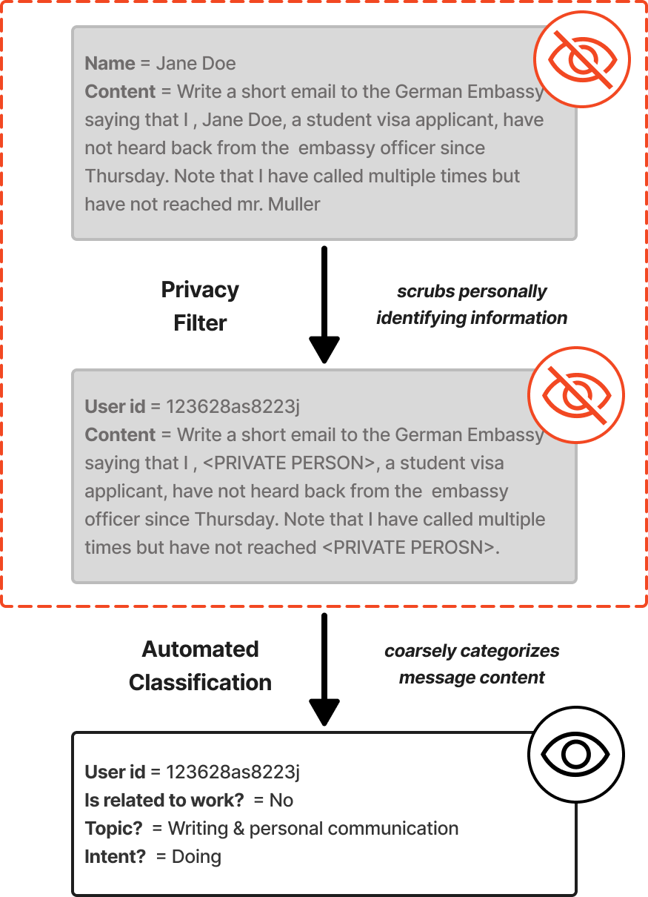
[图1：] [隐私保护自动化分类管道示例（合成示例）。消息首先通过一个名为] [隐私过滤器][的内部LLM工具去除PII信息。然后由]
[基于LLM的自动化分类器进行分类，详见附录[A]和[B]。人类不会看到原始消息] [或PII清理后的消息，只能看到消息的最终分类结果。]
在进行本文分析时，没有人查看消息内容。所有消息内容分析都是通过在去标识化和PII清理后的消息数据上运行的基于LLM的自动化分类器进行的（见图[1]）。消息首先通过内部基于LLM的工具清理PII信息[17]，然后根据在受控标签空间上定义的分类器进行分类——我们在消息级数据集上使用的最精确分类器是O*NET中级工作活动分类法(Intermediate Work Activities taxonomy)，我们将其扩展到333个类别。我们引入了技术和程序障碍来防止意外访问底层文本（例如，不向研究人员呈现消息文本的界面）。
我们的分类旨在识别给定消息的意图，因此我们将对话中的前10条消息作为上下文[18]。例如，参见表[2]。
| 独立消息 | 带有先前上下文的消息 |
|---|---|
| [用户]: “再来10个” | [用户]: “给我3个适合青少年的文化活动” |
| [助手]: “1. 参观博物馆…” （已截断） | |
| [用户]: “再来10个” |
[表2：] [上下文增强消息分类示例（合成示例）。左列] [显示要分类的独立消息，右列显示在] [分类左侧消息时包含的先前上下文。]
我们将每条消息截断到最多5,000个字符，因为长上下文窗口可能导致分类质量的变异性[(Liu et al., 2023)]。我们使用”gpt-5-mini”模型对每条消息进行分类，但交互质量(Interaction Quality)除外，后者使用”gpt-5”，使用附录[A]中列出的提示。
[17][内部分析显示，该工具] [隐私过滤器][与人类判断具有实质性的一致性。] [18][在] [交互质量][的情况下，我们还将对话中的接下来两条消息作为上下文包含。]
我们通过将模型分类决策与人类判断的分类进行比较来验证每个分类提示，使用来自公开可用的WildChat数据集[(Zhao et al., 2024)]的对话样本，这是一组与第三方聊天机器人的对话，用户明确同意公开分享用于研究目的[19]。附录[B]提供了我们验证方法的详细信息以及相对于人类判断的性能。为了进一步提高透明度，我们对100,000条公开WildChat消息样本进行分类，并在本文的复制包中提供这些数据。
我们基于消费者ChatGPT用户样本的公开可用数据，对聚合就业类别进行了有限分析。该样本包括大约130,000名免费版、增强版和专业版用户，就业类别由供应商通过安全数据洁净室(Data Clean Room, DCR)进行聚合。在此分析中，我们使用与消息级数据集相同的排除标准：我们排除了停用用户、被禁用户、选择退出训练的用户，以及自报年龄低于18岁的用户。由于数据仅适用于用户子集，结果可能不代表完整的用户群体。
描述。 从公开可用来源聚合的就业数据包括行业、粗化为O*NET类别的职业、资历级别、公司规模，以及仅限于所获得学位的教育信息。在DCR内工作的供应商采购了该数据集，限制我们只能通过DCR对其运行聚合查询，并在研究完成后删除了数据。
通过数据洁净室保护隐私。 我们从未直接访问用户级人口统计记录。所有就业数据分析都在安全DCR内独家执行，该DCR仅允许对独立持有的数据集进行预先批准的聚合计算；任何一方都无法查看或导出另一方的底层记录。我们使用严格协议管理DCR：要执行任何涉及外部人口统计数据的查询，我们首先从6名共同作者组成的委员会获得明确批准，然后将笔记本提交给我们的数据合作伙伴审批；只有获得批准的笔记本才能在DCR中运行（见图[2]）。
我们的合作伙伴执行严格的聚合限制：他们只批准返回满足100用户阈值的单元格的代码。因此，研究人员从未看到任何单独行或狭窄定义的类别。例如，如果99名用户的职业是”麻醉师”，任何职业级输出都会将这些用户放入”抑制”类别，或将这些观察结果放入粗化类别（例如”医疗专业人员”）而不是报告单独的麻醉师单元格。
[19][该数据集是从使用OpenAI的LLM通过其API的第三方聊天机器人收集的。]
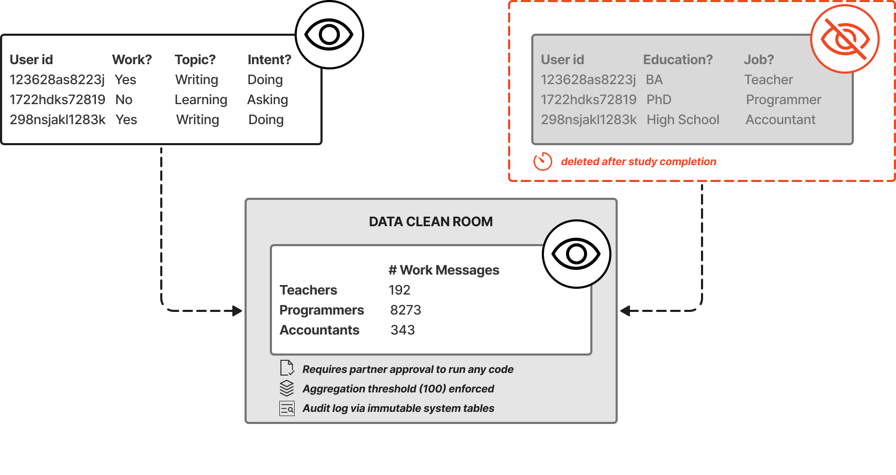
[图2：] [通过数据洁净室进行聚合就业类别分析的示例。在数据洁净室中运行的所有查询] [必须得到我们数据合作伙伴的批准，执行严格的聚合阈值（100] [个观察值）。因此，研究人员无法访问用户级就业数据，只能访问聚合就业] [类别。]
我们在分析的每个阶段都采取了保护用户隐私的措施。总结来说，我们方法的关键要素包括：
消息的自动化分类。在分析过程中，没有人直接查看用户消息的内容：我们对用户消息内容的所有分析都是通过在去标识化和个人身份信息(PII)清理的使用数据上运行的自动化分类器的输出完成的。
通过数据洁净室的聚合就业数据。我们通过安全的数据洁净室环境分析和报告聚合就业数据：研究团队中没有人直接访问用户级人口统计数据，我们的分析报告中没有少于100个用户的群体聚合数据。
通过遵循这些措施，我们旨在达到或超越其他研究聊天机器人的社会科学家以及将数字平台数据与外部数据源关联的研究者所设立的隐私保护先例。
我们遵循了最近聊天机器人对话分析中建立的先例[(Phang et al.][(2025),] [Eloundou et al. (2025),] [Handa et al. (2025),] [Tomlinson et al. (2025))]，这些研究依赖自动化分类而非人工检查原始记录。特别是，[Phang et al. (2025)]对ChatGPT情感使用的研究和[Eloundou et al. (2025)]对聊天机器人第一人称公平性的调查都通过自动化分类器分析ChatGPT消息内容，并强调基于分类器的标记作为一种可扩展的、保护隐私的方法。Anthropic的[Handa et al. (2025)]使用了类似的方法：他们的Clio方法将自动化分类器应用于大量对话集合，将对话分类为数千个主题，在附录中描述了对抽样对话的人工验证(100个用户对话被标记供审查，100个随机抽样校准)。与Eloundou等人一样，我们使用WildChat（一个用户对话的公共数据集）来验证我们的分类器。
其他论文分析了数字行为和人口统计数据；我们在此提及几个相关先例。例如，[Humlum and Vestergaard (2025b)]和[Humlum and Vestergaard (2025a)]分析了关于聊天机器人使用的大规模调查以及丹麦行政劳动力市场数据。[Chetty et al. (2022)]分析了去标识化的Facebook友谊图谱和匿名化的IRS税收记录，在邮政编码级别进行聚合。
ChatGPT于2022年11月30日作为”研究预览版”向公众发布，到12月5日已有超过一百万注册用户。图[3]报告了消费者计划上总体周活跃用户(WAU)随时间的增长情况。ChatGPT在一年后拥有超过1亿登录WAU，两年后接近3.5亿。到2025年7月底，ChatGPT拥有超过7亿总WAU，接近世界成年人口的10%。[20]
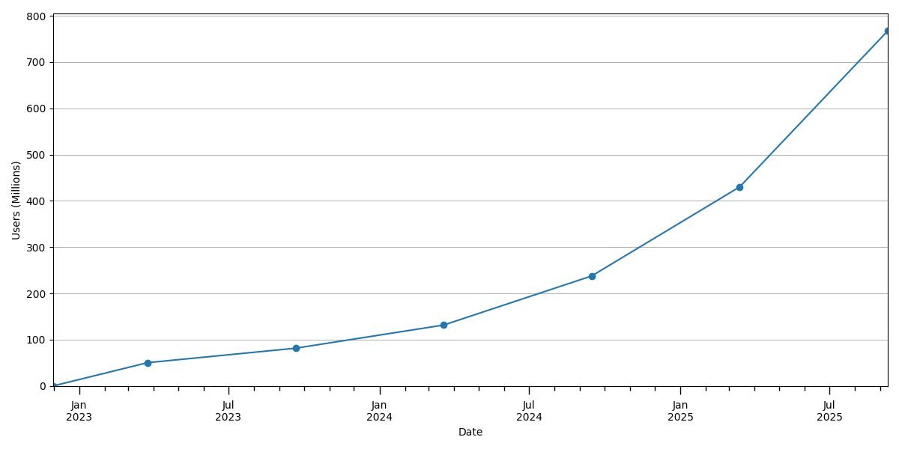
[图3：] [消费者计划(免费、Plus、Pro)上的ChatGPT周活跃用户数，显示为每六个月的时点快照，2022年11月至2025年9月。]
图[4]展示了用户发送消息总量随时间的增长。实线显示，在2024年7月至2025年7月之间，发送的消息数量增长了5倍多。
图[4]还显示了各个用户群体对总消息量的贡献。黄线代表ChatGPT的第一批用户群体：他们的使用量在2023年有所下降，但在2024年底开始再次增长，现在比以往任何时候都高。粉线代表2023年第三季度或更早注册用户的消息，因此
[20][注意，我们预期当一个人有两个账户时（或者对于未登录用户，一个人使用两个设备），我们的不同账户计数会略高于不同人数。对于登录用户，计数基于不同的登录凭据（电子邮件地址），一个人可能有多个账户。对于未登录用户，计数基于不同的浏览器cookie；如果有人清除cookie后返回ChatGPT，或者在同一周用两个不同设备访问ChatGPT，这会重复计算。]
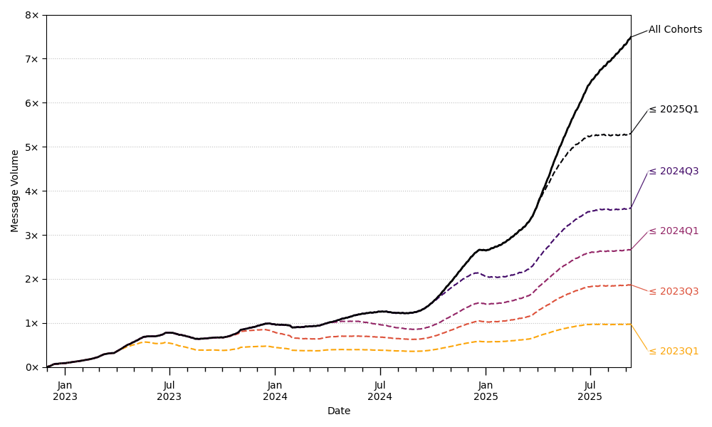
[图4：] [ChatGPT消费者计划(免费、Plus、Pro)的日消息量，按请求用户的注册日期分组。报告值为过去90天的移动平均值。Y轴是标准化为2024年第一季度末(2024年4月1日)“所有群体”报告值的指数。]
黄线和粉线之间的差异代表2023年第二和第三季度注册用户发送的消息。新用户群体和现有群体的增长都带来了消息量的显著增长。
图[5]对每个群体进行标准化，绘制每周活跃用户的日消息数。每条线代表一个单独的群体(而不是像图[4]中的累积群体)。该图显示较早注册的用户一直有较高的使用率，但每个群体内的使用率也在持续增长，我们将此解释为由于(1)模型能力的改进，以及(2)用户逐渐发现现有能力的新用途。
接下来我们使用各种不同的分类法报告ChatGPT对话的内容。对于每个分类法，我们描述一个定义一组类别的”提示”，然后应用LLM将每条消息映射到一个类别。我们的类别通常适用于用户的意图，而不是对话的文本，因此我们从未直接观察到真实情况。尽管如此，分类器结果可以解释为人类会做出的最佳猜测推断：LLM的猜测与来自相同提示的人类猜测高度相关，当提示包含”不确定”的第三类别时，我们得到类似的定性结果。
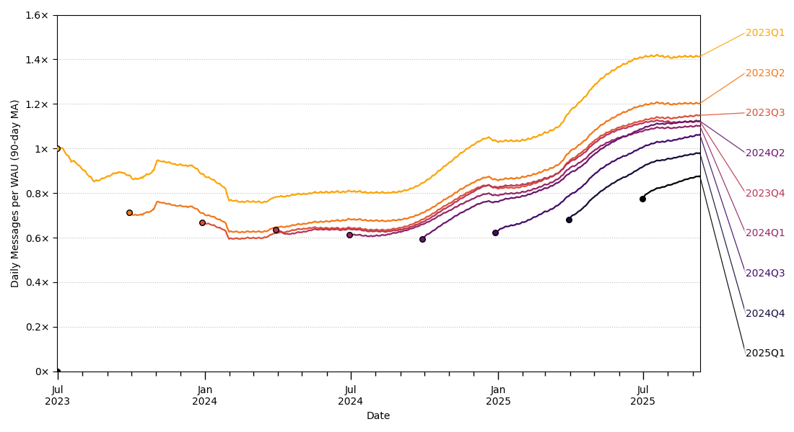
图5：按注册群组划分的每周活跃用户日发送消息数。样本仅考虑ChatGPT消费者计划用户（免费、Plus、专业版）。报告值为过去90天的移动平均值，从群组完全形成后90天开始报告。Y轴是标准化为2023年第一季度群组首次报告值的指数。
我们使用LLM分类器根据每条用户消息是否与工作相关来标记数据集中的消息。提示的关键部分如下：
此对话记录的最后一条用户消息是否可能与某些工作/就业相关？用以下之一回答：
可能与工作相关（例如，“重写这份人力资源投诉”）
可能与工作无关（例如，“冰块能减少痤疮吗？”）
表1显示，在2024年6月至2025年6月期间，两种类型的查询都快速增长，但与工作无关的消息增长更快：2024年6月有53%的消息与工作无关，到2025年6月这一比例攀升至73%。
图6显示了按累计注册群组分解的非工作消息份额。连续群组的非工作消息份额更高，每个群组内部的非工作使用也在增加。比较所有用户中的份额（黑线）与最早群组用户中的份额（黄线），可以看到它们跟踪得非常接近。
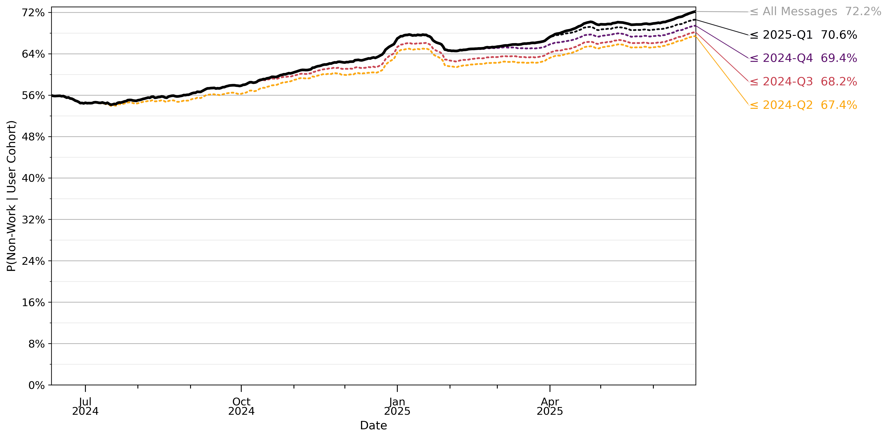
图6：实线黑线表示给定日期消息与工作无关的概率，由自动分类器确定。值在28天滞后窗口内平均。虚线橙线显示相同计算，但条件是消息来自在2024年第二季度或之前首次使用ChatGPT的用户。其余线条为后续季度类似定义，较新群组的颜色更冷。计数根据2024年5月15日至2025年6月26日约110万条采样对话计算。观察值重新加权以反映给定日期的总消息量。采样详情见第3节。
我们修改了OpenAI内部研究团队使用的分类器，该分类器识别用户从ChatGPT请求的功能。分类器本身直接将用户查询分配到24个类别之一。我们将这24个类别聚合为七个主题分组（完整的对话分类提示见附录A）：
| 主题 | 对话类别 |
|---|---|
| 写作 | 编辑或评论提供的文本 |
| 个人写作或沟通 | |
| 翻译 | |
| 论证或摘要生成 | |
| 写小说 | |
| 实用指导 | 操作建议 |
| 辅导或教学 | |
| 创意构思 | |
| 健康、健身、美容或自我护理 | |
| 技术帮助 | 数学计算 |
| 数据分析 | |
| 计算机编程 | |
| 多媒体 | 创建图像 |
| 分析图像 | |
| 生成或检索其他媒体 | |
| 寻求信息 | 具体信息 |
| 可购买产品 | |
| 烹饪和食谱 | |
| 自我表达 | 问候和闲聊 |
| 关系和个人反思 | |
| 游戏和角色扮演 | |
| 其他/未知 | 询问模型 |
| 其他 | |
| 不清楚 |
表3：粗略对话主题和基础分类器类别
图7显示了用户消息随时间的构成。三个最常见的对话主题是实用指导、寻求信息和写作，共占所有ChatGPT对话的约77%。实用指导保持在总使用量的约29%。写作从2024年7月的36%下降到一年后的24%。寻求信息在同期从14%增长到24%。技术帮助的份额从2024年7月的12%下降到一年后的约5%——这可能是因为LLM在编程方面的使用通过API（ChatGPT外部）、代码编辑中的AI辅助和自主编程代理(autonomous programming agents)（如Codex）快速增长。多媒体从2%增长到略超7%，在2025年4月ChatGPT发布新的图像生成功能后出现大幅飙升：飙升有所缓解，但升高水平持续存在。
图8显示对话主题，将样本限制为仅与工作相关的消息。2025年7月约40%的工作相关消息是写作，这是迄今为止最常见的对话主题。实用指导是第二常见的用例，占24%。技术帮助从2024年7月工作相关消息的18%下降到2025年7月的略超10%。
图9将七个对话主题中的四个分解为更小的组，并总结了一年期间每种类型的消息。例如，写作中的五个子类别按频率顺序为：编辑或评论提供的文本、个人写作或沟通、翻译、论证或摘要生成、写小说。这五个类别中有三个（编辑或评论提供的文本、翻译、论证或摘要生成）是修改用户提供给ChatGPT文本的请求，而其他两个是生成新文本的请求。前者占所有写作对话的三分之二。
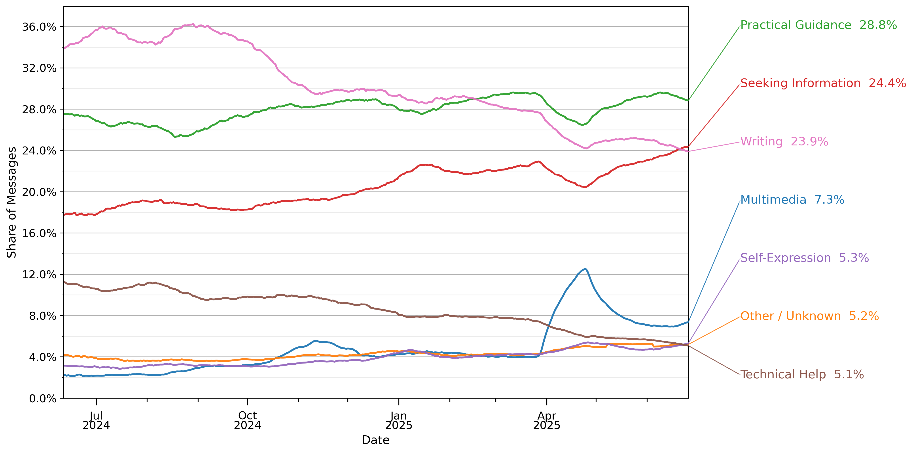
图7：按高级对话主题分解的消费者ChatGPT消息份额
根据表3中的映射进行分类。数值在28天滞后窗口期内取平均值。份额是从2024年5月15日至2025年6月26日期间约110万个抽样对话样本中计算得出的。观察结果经过重新加权以反映某一天的总消息量。抽样详情见第3节。
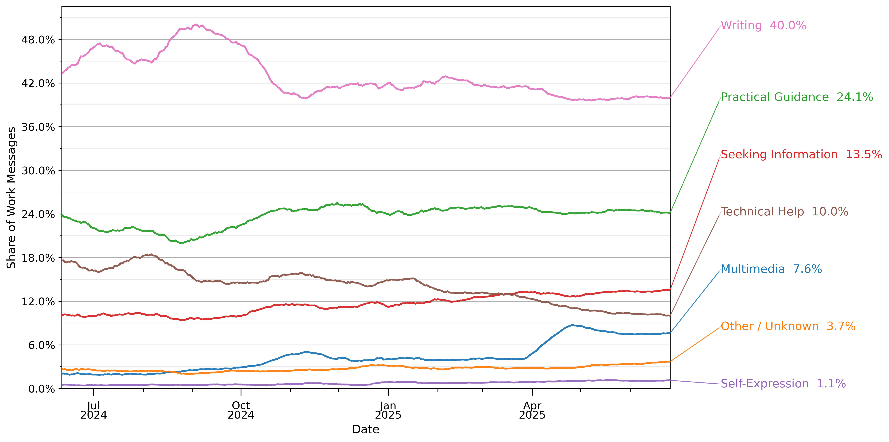
根据表3中的映射进行分类。数值在28天滞后窗口期内取平均值。份额是从2024年5月15日至2025年6月26日期间约110万个抽样对话样本中计算得出的。观察结果经过重新加权以反映某一天的总消息量。抽样详情见第3节。
这表明大多数用户与ChatGPT的写作对话是要求修改用户输入，而不是创建全新内容。教育是ChatGPT的主要使用场景。所有用户消息的10.2%和实用指导消息的36%是关于辅导或教学的请求。另一个很大的份额——总计8.5%和实用指导的30%——是关于各种主题的一般操作指南建议。技术帮助包括计算机编程(4.2%的消息)、数学计算(3%)和数据分析(0.4%)。从自我表达主题来看，只有2.4%的ChatGPT消息涉及人际关系和个人反思(1.9%)或游戏和角色扮演(0.4%)。
虽然用户可以从传统的网络搜索引擎以及ChatGPT中寻求信息和建议，但生成写作、软件代码、电子表格和其他数字产品的能力使生成式AI区别于现有技术。即使对于寻求信息和实用指导等传统应用，ChatGPT也比网络搜索更灵活，因为用户可以获得定制化响应(如量身定制的锻炼计划、新产品想法、梦幻足球队名创意)，这些响应代表新生成的内容或对用户提供内容的新颖修改以及后续请求。
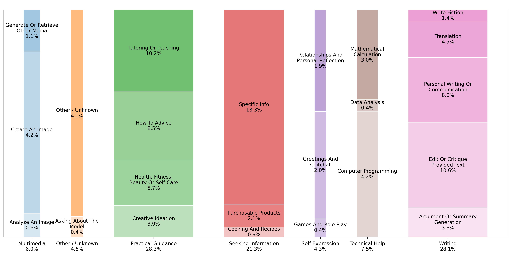
底层分类器提示可在附录A中找到。每个区间报告总体人群的百分比。份额是从2024年5月15日至2025年6月26日期间约110万个抽样对话样本中计算得出的。观察结果经过重新加权以反映某一天的总消息量。抽样详情见第3节。
关于生成式AI经济影响的现有研究几乎完全专注于AI执行工作场所任务的潜力，要么增强要么自动化人类劳动(例如Eloundou等人(2025)，Handa等人(2025)，Tomlinson等人(2025))。然而，生成式AI是一种高度灵活的技术，可以以多种不同方式使用。为了更多了解人们如何在工作和工作之外寻求使用生成式AI，我们引入了一个分类器，旨在衡量用户希望接收的输出类型。具体来说，我们根据用户意图对消息进行分类，根据简单的询问(Asking)、执行(Doing)或表达(Expressing)标准对对话进行编码。我们分类提示的关键部分如下：
询问 询问是寻求信息或建议，帮助用户在工作、学校或个人生活中获得更好的信息或做出更好的决定。(例如”林肯之后谁是总统？“、”我如何为本季度制定预算？“、”去年的通胀率是多少？“、”相关性和因果关系的区别是什么？“、”在开放注册期间选择健康计划时我应该注意什么？“)。
执行 执行消息要求ChatGPT为用户执行任务。用户正在起草电子邮件、编写代码等。如果消息包含对主要由模型创建的输出请求，则将消息分类为”执行”。(例如”重写这封邮件使其更正式”、“起草一份总结ChatGPT用例的报告”、“制作一个包含里程碑和风险的项目时间表”、“从此文本中提取公司、人员和日期到CSV中”、“为此应用编写Dockerfile和最小的docker-compose.yml”。)
表达 表达陈述既不是寻求信息，也不是要求聊天机器人执行任务。
从概念上讲，执行对话提供可以插入生产过程的输出，而询问对话支持决策制定但不直接产生输出，表达对话几乎没有经济内容。
图10显示了我们样本中每种意图类型的消息份额。49%的用户消息是询问，40%是执行，11%是表达。该图还显示了与我们主题分类的关系：两种分类法相关但不冗余：询问查询更可能是实用指导和寻求信息。执行查询不成比例地是写作和多媒体。表达查询不成比例地是自我表达。然而，重叠并不完美。例如，在实用指导主题内，询问消息可能是关于如何根据用户个人历史从运动伤害中恢复的建议，而执行消息可能要求ChatGPT制作一个可以打印或保存的定制恢复和训练计划。在技术帮助内，询问消息可能要求帮助理解如何调试某些代码，而执行消息可能要求ChatGPT直接为用户编写代码。
图11仅针对工作相关消息呈现询问/执行/表达的份额。执行
构成了近56%的工作相关查询，相比之下询问占35%，表达占9%。近35%的所有工作相关查询都是与写作相关的执行消息。在技术帮助查询中，执行和询问占据相等的份额。
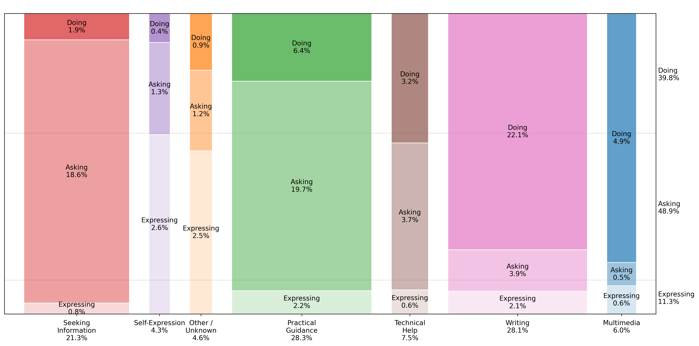
图10：按询问/执行/表达类别划分的对话主题分布，主题列按”执行”消息的相对比例排序。这些自动分类器的提示在附录A中提供。详细的对话主题内容分解请参见表3。每个分组报告总人群的百分比。份额计算基于2024年5月15日至2025年6月26日期间约110万个抽样对话的样本。观察结果经过重新加权以反映给定日期的总消息量。抽样详情见第3节。
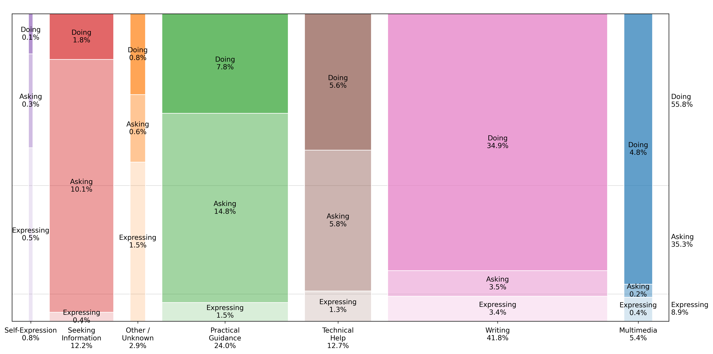
图11：仅限工作相关消息的按询问/执行/表达类别划分的对话主题分布，主题列按”执行”消息的相对比例排序。这些自动分类器的提示在附录A中提供。详细的对话主题内容分解请参见表3。每个分组报告总人群的百分比。份额计算基于2024年5月15日至2025年6月26日期间约110万个抽样对话的样本。观察结果经过重新加权以反映给定日期的总消息量。抽样详情见第3节。
图12显示了用户意图消息构成随时间的变化。在2024年7月，使用率在询问和执行之间平均分配，略低于8%的消息被归类为表达。在接下来的一年中，询问和表达的增长速度远超执行，到2025年6月下旬，分布为51.6%询问、34.6%执行和13.8%表达。
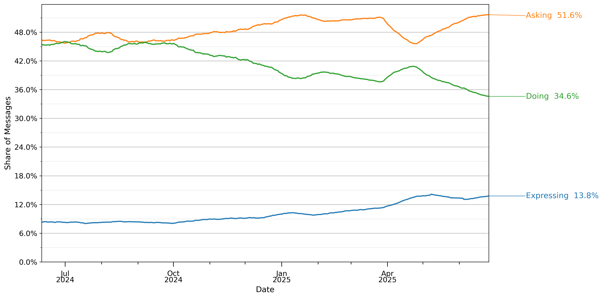
图12：由自动三元分类器分类为询问、执行或表达的消息份额。数值采用28天滞后窗口平均。份额计算基于2024年5月15日至2025年6月26日期间约110万个抽样对话的样本。观察结果经过重新加权以反映给定日期的总消息量。抽样详情见第3节。
图13显示了按用户意图划分的工作相关消息份额。执行消息约占消息的40%，在工作相关和非工作相关消息之间平均分配。
我们使用职业信息网络(ONET)数据库版本29.0将消息内容映射到工作活动，类似于Tomlinson等人(2025)的方法。ONET与美国劳工部合作开发，系统性地根据执行工作所需的技能、任务和工作活动对职业进行分类。O*NET将每个职业与一组在不同强度水平下执行的任务相关联。然后将每个任务聚合到三个详细级别——2,087个详细工作活动(DWAs)、332个中级工作活动(IWAs)和41个通用工作活动(GWAs)。
为了了解与ChatGPT使用相关的工作活动，我们将消息映射到332个ONET中级工作活动(IWA)中的一个，并增加一个模糊选项来处理用户消息缺乏足够上下文的情况。然后我们使用官方的ONET分类法将这些分类的IWAs映射到通用工作活动(GWA)之一。我们不显示以下GWAs的份额，因为每个类别发送消息的用户少于100个，并将它们归类为抑制类别。
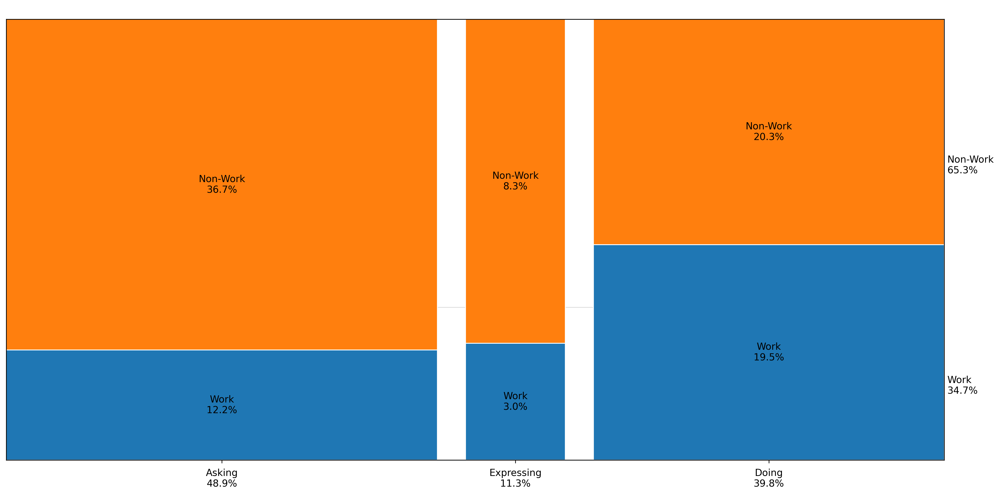
图13：按工作与非工作划分的询问、执行和表达消息份额。请参见附录A查看自动分类器使用的提示。右侧注释显示了完整样本中工作和非工作的份额。每个分组报告总人群的百分比。份额计算基于2024年5月15日至2025年6月26日期间约110万个抽样对话的样本。观察结果经过重新加权以反映给定日期的总消息量。抽样详情见第3节。
图14按降序显示了属于每个GWA的消息份额。近一半的消息(45.2%)仅属于三个与信息使用和操作相关的GWAs：获取信息(19.3%)、为他人解释信息含义(13.1%)和记录/记录信息(12.8%)。其次最常见的工作活动是提供咨询和建议(9.2%)、创造性思考(9.1%)、决策和解决问题(8.5%)以及计算机工作(4.9%)。这七个GWAs总共占所有消息的76.9%。
图15显示了我们分类为工作相关消息子样本的GWAs分布。在工作相关消息中，最常见的GWAs是记录和记录信息(13.2%)、决策和解决问题(10.6%)、创造性思考(9.3%)、计算机工作(7.7%)、为他人解释信息含义(7.3%)、获取信息(6.7%)和向他人提供咨询和建议(3.1%)。这七个GWAs总共占工作相关消息的57.9%。总体而言，ChatGPT在工作中的使用似乎主要集中在两个广泛功能上：1)获取、记录和解释信息；2)决策、提供建议、解决问题和创造性思考。
图14： 110万条ChatGPT消息的GWA分布。消息被分类为332个ONET IWA(工作重要活动)中的一个，或归类为模糊。使用附录中提供的提示进行分类。然后使用ONET工作活动分类法将IWA聚合为GWA。消息样本来自2024年5月15日至2025年6月26日。我们不显示以下GWA的份额，因为每个类别发送消息的用户少于100个，并将它们归类为已抑制。
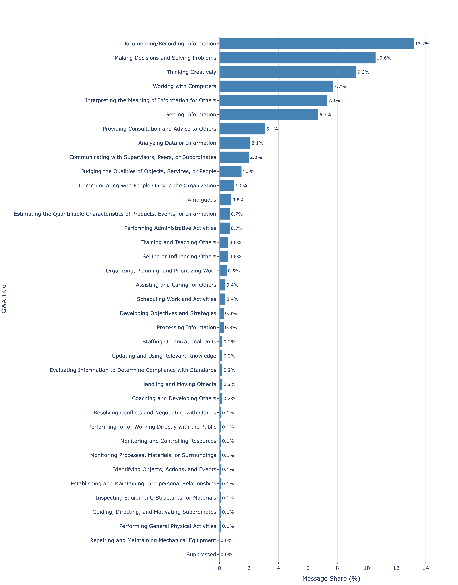
图15： 约366,000条工作分类消息的GWA分布。消息被分类为332个ONET IWA或模糊。然后使用ONET工作活动分类法将IWA聚合为GWA。消息还被额外分类为与工作或非工作相关。GWA份额仅显示工作分类消息。消息样本来自2024年5月15日至2025年6月26日。我们不显示以下GWA的份额，因为每个类别发送消息的用户少于100个，并将它们归类为已抑制。提示在附录中提供。
我们还使用自动分类器来研究用户对聊天机器人响应的明显满意度。我们的互动质量分类器在同一对话的用户后续消息中寻找满意或不满意的表达（如果存在），有三个可能的类别：好、差和未知。
图16显示了这三个类别消息的整体增长情况。在2024年末，好的互动大约是差的互动的三倍，但好的互动在接下来的九个月中增长得更快，到2025年7月，它们已经是差的互动的四倍多。
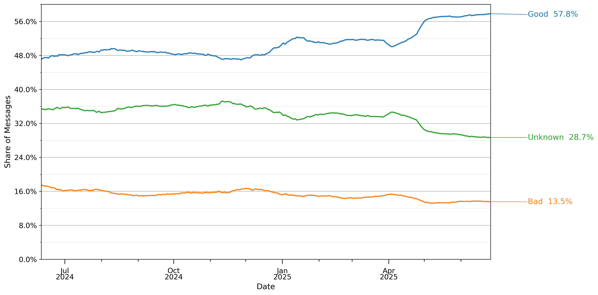
图16： 基于用户提供的下一个响应的自动情感分析的互动质量份额。请参阅附录B以了解此分类器如何验证。数值在28天滞后窗口内平均。份额从2024年5月15日至2025年6月26日约110万个抽样对话样本中计算。观察结果被重新加权以反映给定日期的总消息量。抽样详情见第3节。
此分类器的验证详情，以及它与用户明确点赞/点踩注释的相关性测量，包含在附录B中。
图17显示了按对话主题和互动类型分类的好坏消息比率，由互动质量评级。面板A显示自我表达是评级最高的主题，好坏比率超过7，与此类别的增长一致。多媒体和技术帮助的好坏比率最低（分别为1.7和2.7）。面板B显示询问消息比执行或表达消息更有可能获得好评。
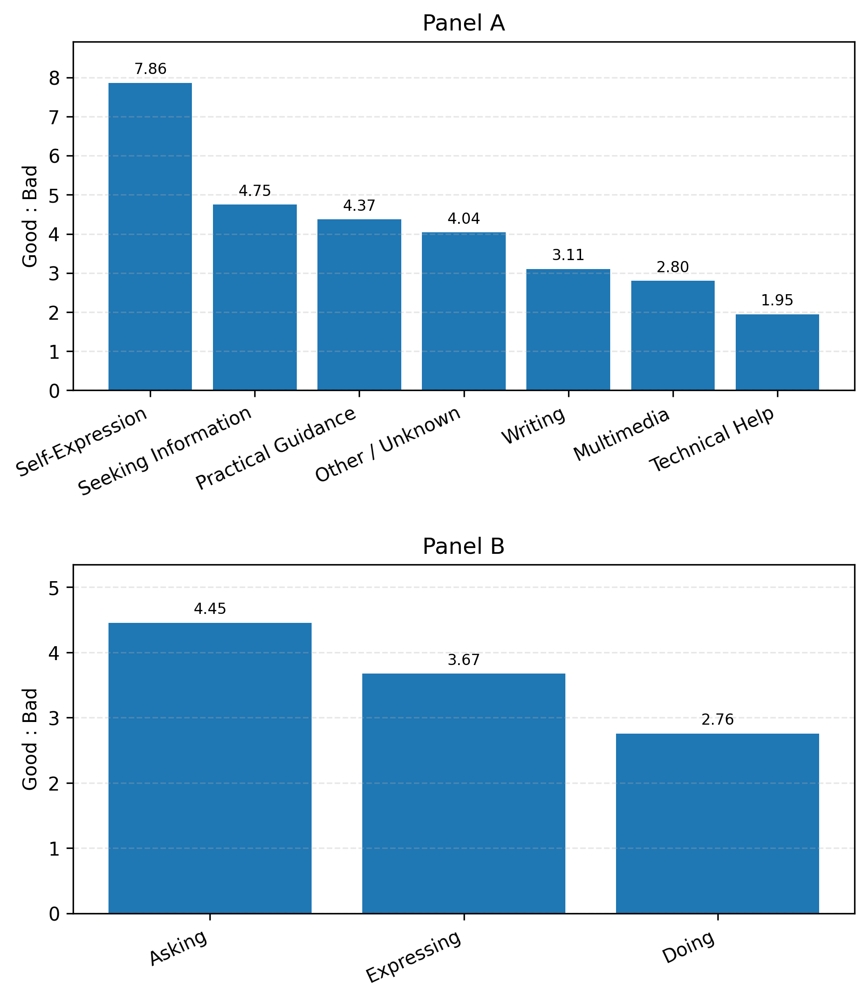
图17： 按对话主题（面板A）和询问/执行/表达分类（面板B）的用户互动平均好坏比率。这些自动分类器的提示（除了互动质量）在附录A中提供。数值代表2024年5月15日至2025年6月26日的平均比率，其中观察结果被重新加权以反映给定日期的总消息量。抽样详情见第3节。
在本节中，我们报告了关于谁在使用消费者ChatGPT的基本描述性事实。现有研究记录了美国代表性样本中人口群体在生成式AI使用方面的差异（Bick等人，2024年；Hartley等人，2025年）以及丹麦部分职业中的差异（Humlum和Vestergaard，2025a）。所有这些论文都发现，男性、年轻人和接受过高等教育和/或研究生教育的人更频繁地使用生成式AI。
相对于之前的文献，我们做出了三个贡献。首先，我们在全球样本而非单一国家中确认了这些广泛的人口统计模式。其次，我们为选定的人口统计数据（如年龄、性别和原籍国）提供了更多细节，并研究了每个群体的差距如何随时间变化。第三，我们使用安全数据清洁室分析ChatGPT使用如何因教育和职业而异。
我们通过使用姓名-性别关联的公共聚合数据集对超过110万ChatGPT用户的名字进行分类，来调查性别潜在差异。我们使用了世界性别姓名词典、社会保障热门姓名，以及巴西和拉丁美洲热门姓名数据集。此方法类似于Hofstra等人（2020年）和West等人（2013年）的研究。不在这些数据集中的姓名，或在数据集中被标记为模糊的姓名，或在这些数据集中有显著分歧的姓名被分类为未知。
排除未知类别，在ChatGPT发布后的前几个月，周活跃用户(WAU)中很大一部分（约80%）是使用典型男性名字的用户。然而，在2025年上半年，我们看到使用典型女性和典型男性名字的活跃用户份额接近平等。到2025年6月，我们观察到活跃用户更可能拥有典型女性名字。这表明ChatGPT使用中的性别差距随着时间的推移已大幅缩小。
我们还研究了使用主题的差异。拥有典型女性名字的用户相对更多地
可能发送与写作和实用指导相关的消息。相比之下，拥有典型男性名字的用户更可能使用ChatGPT进行技术帮助、寻找信息和多媒体处理（例如，修改或创建图像）。
部分用户在注册OpenAI时会自报年龄。在自报年龄的用户中，我们数据集中大约46%的消息来自18-25岁的用户。
年龄较大的用户发送的与工作相关的消息比例更高。与工作相关的消息约占26岁以下用户消息的23%，这一比例随年龄增长而增加。唯一的例外是自称66岁或以上的用户，其分类消息中只有16%与工作相关。下图显示了各年龄组与工作相关消息比例的趋势。随着时间推移，所有年龄用户的ChatGPT使用都变得与工作关联性较少。
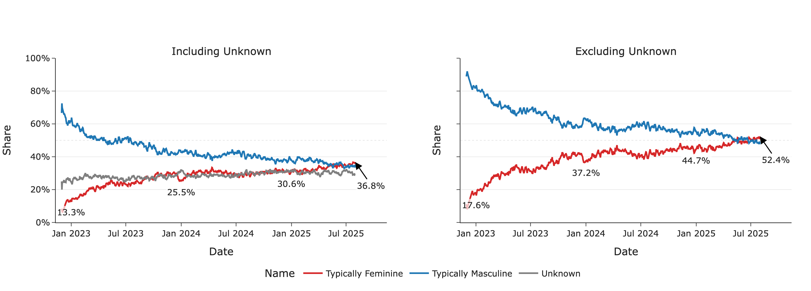
图18： 按典型男性和典型女性名字分类的每周活跃用户细分。我们基于110万个ChatGPT账户的统一样本，遵循与我们分析的其他数据集相同的用户排除原则。请注意，这是与第3节描述的样本不同的独立样本。名字通过公开的姓名-性别关联聚合数据集分类为典型男性或典型女性。
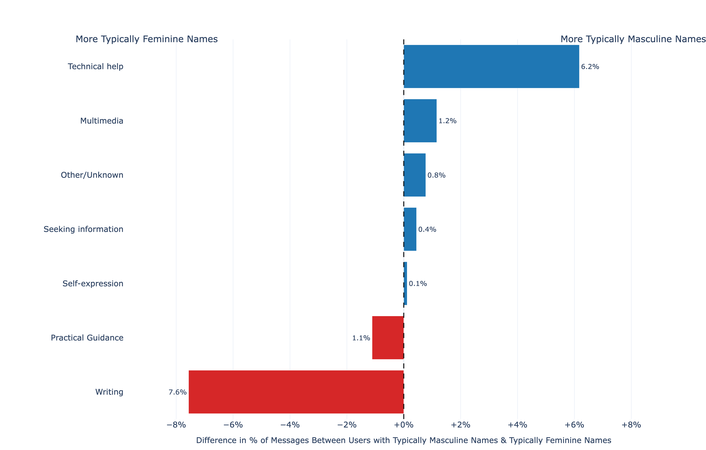
图19： 按典型男性/女性名字用户消息中话题流行度份额的差异。我们基于110万个ChatGPT账户的统一样本，遵循与我们分析的其他数据集相同的用户排除原则。请注意，这是与第3节描述的样本不同的独立样本。名字通过公开的姓名-性别关联聚合数据集分类为典型男性或典型女性。话题是分类器聚合分组的结果，我们在附录A中提供了其提示。
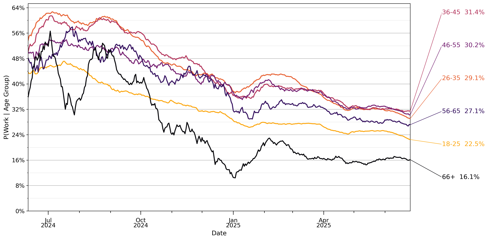
图20： 基于自报用户年龄的消息与工作相关的可能性。与工作相关的消息通过自动分类器识别。与我们的其他样本一样（见第3节），自报年龄低于18岁的用户被排除在分析之外。数值在28天滞后窗口内平均。份额从2024年5月15日至2025年6月26日约110万个抽样对话样本中计算得出。观察值经过重新加权以反映给定日期的总消息量。
我们通过测量人口超过100万国家中互联网用户群体中每周消费ChatGPT用户的比例来研究ChatGPT使用的全球模式。我们还排除了ChatGPT被封锁的国家。下图按人均GDP十分位数绘制了2024年5月和2025年5月的这一比例：国家按人均GDP排名并分为十个十分位数，x轴显示每个十分位数的中位人均GDP（以千美元为单位）。实线显示每个十分位数内的中位份额；阴影带是该十分位数内国家值的四分位数间距（第25-75百分位）。比较2024年5月和2025年5月，我们看到ChatGPT的采用大幅增长，但中低收入国家（人均GDP $10,000-40,000）的增长尤为显著。总体而言，我们发现许多中低收入国家的ChatGPT采用率经历了高速增长。
接下来我们分析与公开可用数据集匹配的结果。
图22展示了ChatGPT使用按用户教育程度的差异。面板A显示了学历低于学士学位、恰好拥有学士学位和接受过一些研究生教育的用户中与工作相关的消息份额。图22的左侧显示未调整的比较，右侧呈现了消息份额对年龄、姓名是否为典型男性或女性、教育程度、职业类别、工作资历、公司规模和行业回归中教育系数的结果。我们还包括了回归调整结果的95%置信区间。
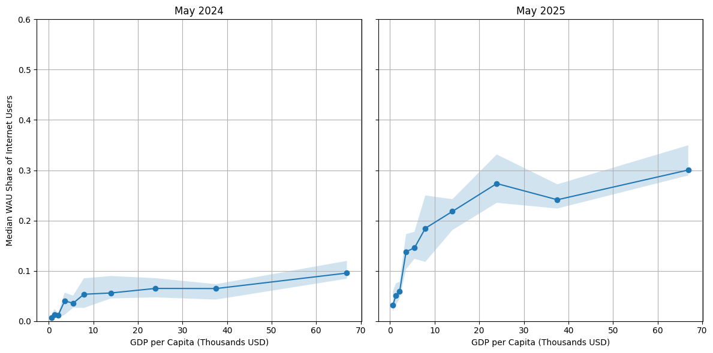
图21： ChatGPT每周活跃用户占互联网人口份额与GDP十分位数，2024年5月对比2025年5月。点估计是每个十分位数内的中位数。互联网使用人口使用世界银行2023年估计。阴影区域表示每个GDP十分位数内国家值的四分位数间距（第25-75百分位）。
受过教育的用户更可能将ChatGPT用于工作。学历低于学士学位的用户中有37%的消息与工作相关，而拥有学士学位的用户为46%，接受过一些研究生教育的用户为48%。在调整其他特征后，这些差异大约减半，但在1%的显著性水平上仍然具有统计学意义。受过教育的用户更可能发送与工作相关的消息。
面板B探讨了教育程度在用户意图方面的差异。询问约占用户消息的49%
对于学历低于学士学位的用户，使用率较高，而对于受教育程度更高的用户，变化很小。经回归调整后，我们发现拥有研究生学位的用户使用ChatGPT发送询问(Asking)消息的可能性高出约2个百分点，这一差异在5%水平上具有统计显著性。在回归调整之前，执行(Doing)消息的频率随教育程度增加而增加。然而，在调整职业等其他特征后，这一模式发生了逆转。拥有研究生学位的用户发送执行消息的可能性比学历低于学士学位的用户低约1.6个百分点，这一差异在10%水平上具有统计显著性。
面板C研究了四个不同对话主题在教育程度上的差异——实用指导、寻求信息、技术帮助和写作。我们发现在大多数类别中，教育程度的差异都很小。唯一的例外是与写作相关的消息份额随教育程度的提高而增加。
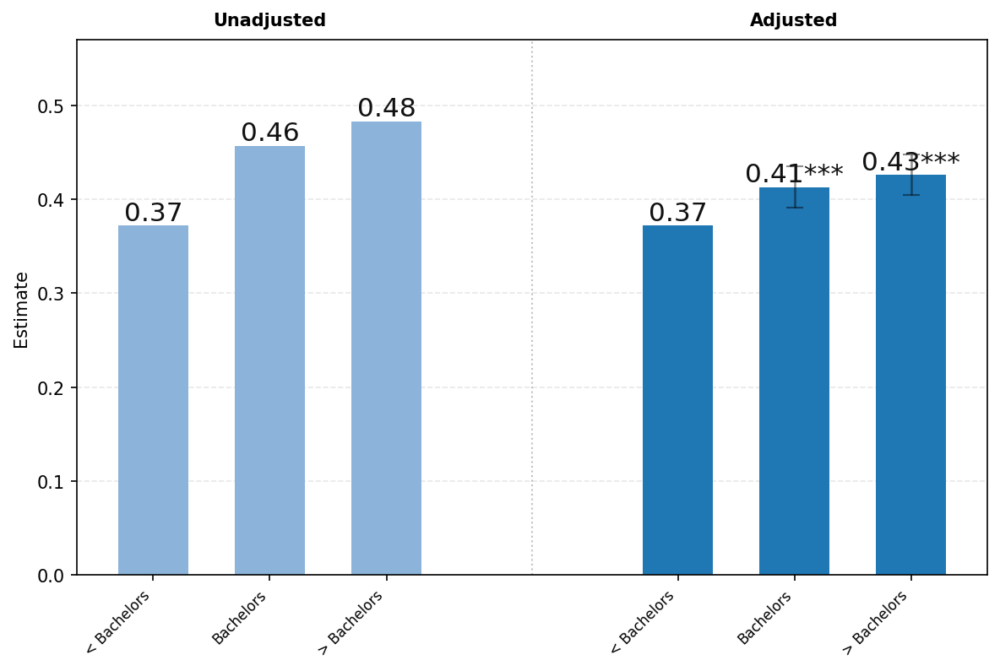
[面板A.] [工作相关]

[面板B1.] [询问.] [面板B2.] [执行.]
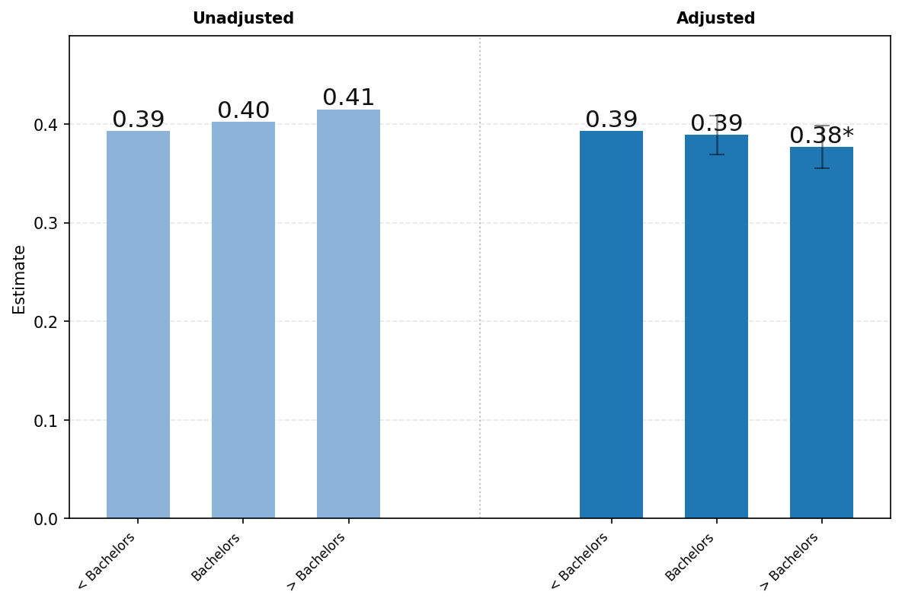
[面板B3.] [表达.]
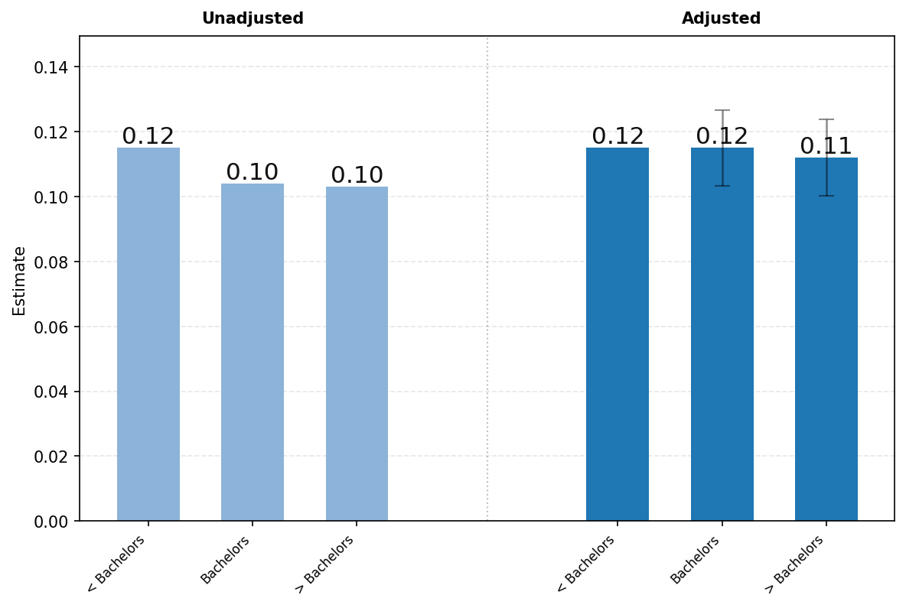
[图22:] [(续下页)]
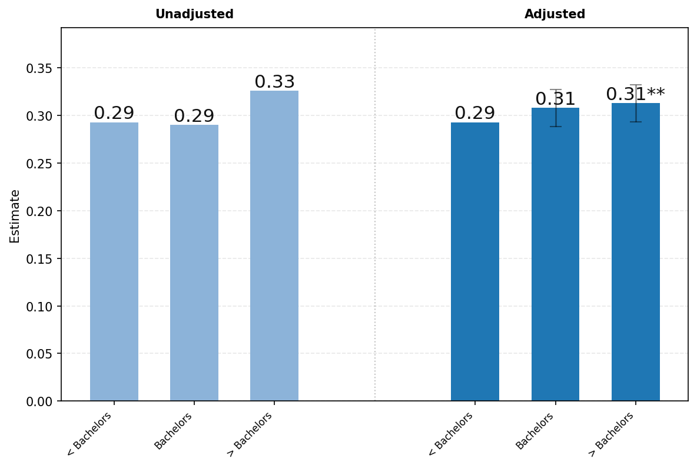
[面板C1.] [写作.] [面板C2.] [技术帮助.]
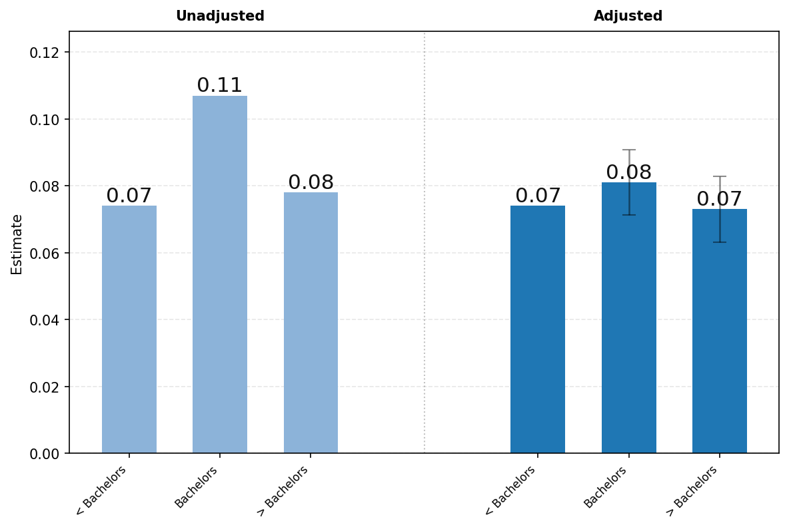
[面板C3.] [寻求信息.] [面板C4.] [实用指导.]
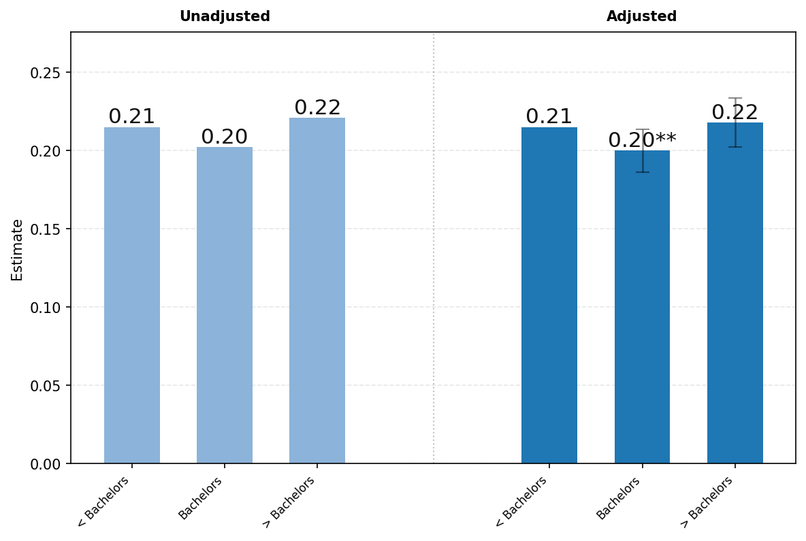
[图22:] [ChatGPT使用情况按教育程度的变化。每个图表显示未调整与回归调整的] [估计值，带有95%置信区间。我们将每个消息份额对教育和职业进行回归，控制][以下协变量：年龄、姓名是否通常为男性或女性、职位资历、公司规模和行业。（为了保证用户隐私，我们将所有协变量粗化为广泛类别，并][通过程序化方式确保每组在运行回归前至少有100名成员）我们将每个教育和职业类别的系数][添加到参考类别的未调整值中，并使用回归系数的标准误差计算95%置信区间。此回归的样本][是原始130,000样本中约40,000名用户，这些用户的公开职业信息不为空白或仅由特殊字符组成（由分类脚本确定）。][每个用户的份额通过从2024年5月至2025年7月随机抽样该用户最多六次对话来计算。]
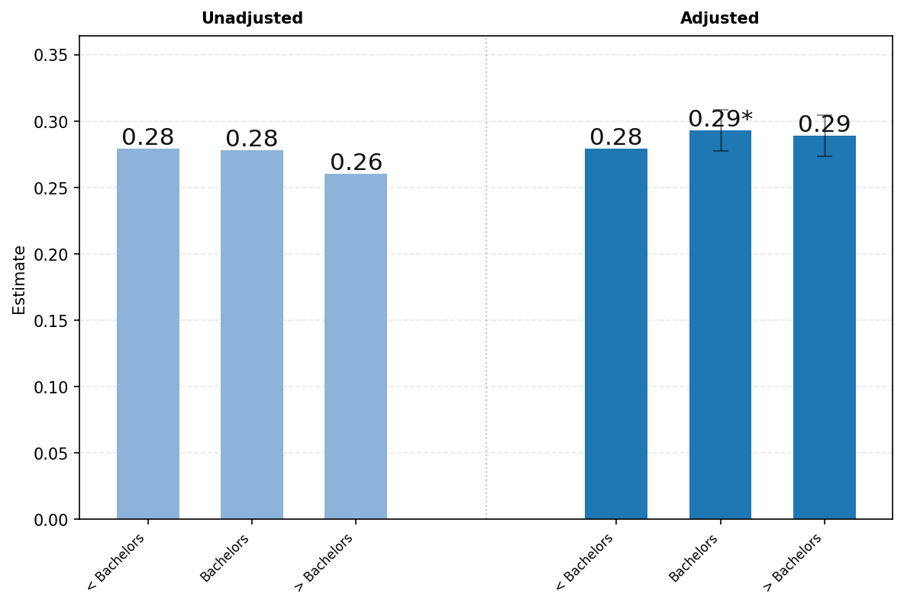
图23展示了ChatGPT使用情况按用户职业的差异。由于隐私保护聚合限制，我们报告以下广泛职业类别的结果——（1）所有非专业职业，包括行政、文书、服务和蓝领职业；（2）计算机相关职业；（3）工程和科学职业；（4）管理和商务职业；以及（5）所有其他专业职业，包括法律、教育和医疗保健。如上所述，图表左侧显示未调整的比较，右侧显示消息份额对年龄、姓名是否通常为男性或女性、教育、职业类别、工作资历、公司规模和行业回归的各职业类别系数。
高薪专业和技术职业的用户更可能将ChatGPT用于工作。面板A显示，未调整的工作份额为：计算机相关职业57%；管理和商务50%；工程和科学48%；其他专业职业44%；所有非专业职业仅40%。回归调整对这些数字略有影响，但职业间的差距仍然在统计上高度显著。高薪专业职业的用户更可能发送工作相关消息。
由于工作使用情况在职业间差异很大，我们在面板B和C中将样本限制为仅工作相关消息。面板B显示了按职业分类的工作相关消息中询问消息的份额。我们发现高薪专业职业的用户更可能使用ChatGPT进行询问而非执行。这在科学和技术职业中尤其明显。计算机相关职业用户发送的工作相关消息中有47%是询问消息，而非专业职业仅为32%。这些差异在回归调整后有所缩小，但仍然在统计上高度显著。
面板C按对话主题显示结果。写作在管理和商务职业用户中特别常见，占所有工作相关消息的52%。写作在非专业和其他专业职业（如教育和医疗保健）中也相对常见，分别占工作相关消息的50%和49%。技术帮助占计算机相关职业用户所有工作相关消息的37%，而在工程和科学中为16%，在所有其他类别中仅约8%。回归调整对职业间差距的影响很小。总体而言，按用户职业的对话主题分布存在显著差异，工作相关消息明显集中在各工作的核心任务上（例如，管理和商务的写作，技术职业的技术帮助）。
我们还提供了与每个广泛职业群体相关的最常见通用工作活动(Generalized Work Activities, GWAs)数据，按2位标准职业分类(Standard Occupation Classification, SOC)代码测量。表24显示了七个最常见的工作相关消息在每个SOC代码中的频率排名
常见 GWA[如.[29]]
[26][管理和商业是 SOC2 代码 11 和 13。计算机相关是 SOC2 代码 15。工程和科学]
[是 SOC2 代码 17 和 19。其他专业是 SOC2 代码 21 到 29。非专业职业是 SOC 代码] [31 到 53。]
[27][如数据和隐私部分所讨论的，我们的数据集仅包括 ChatGPT 消费者计划的用户。企业]
[用户也可能使用 ChatGPT Business（原名 Teams）或 ChatGPT Enterprise。]
[28][很少有工作相关消息被归类为] [表达][。]
[29][附录 [D] 包含按职业分解的 GWA 计数完整报告，包括工作相关的 ChatGPT]
我们发现各职业在工作中使用 ChatGPT 的方式具有显著相似性。例如，
制定决策和解决问题(Making Decisions and Solving Problems)是每个至少可以报告两种 GWA 的职业群体中最常见的两种 GWA 之一[。[30]] 同样，记录和记录信息(Documenting and Recording Information)在所有职业中都排在前四位。创造性思维(Thinking Creatively)在 13 个至少可以报告三种 GWA 的职业群体中的 10 个中排名第三。尽管有 41 种 GWA，但最常见的七种总体上也是每个职业群体中最常见的，并且排名相似。毫不奇怪，计算机工作(Working with Computers)是计算机相关职业中最常见的 GWA。在附录中，我们报告了 GWA 分类与两位数 SOC 代码交叉的完整分布，以及工作相关查询子集中最常请求的 GWA。在所有职业中，ChatGPT 的使用主要集中在寻求信息和决策协助上。
[使用和所有 ChatGPT 使用。]
[30][对于法律和餐饮服务职业，由于用户隐私保护，我们只能对其中一种 GWA 进行排名]
[- 该群体中没有其他 GWA 被超过 100 名用户请求。]
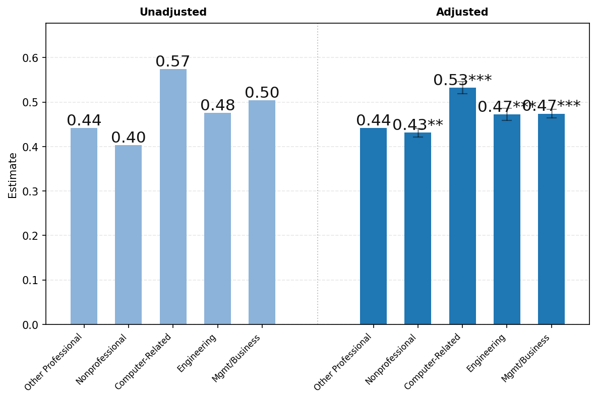
[面板 A。] [工作相关]
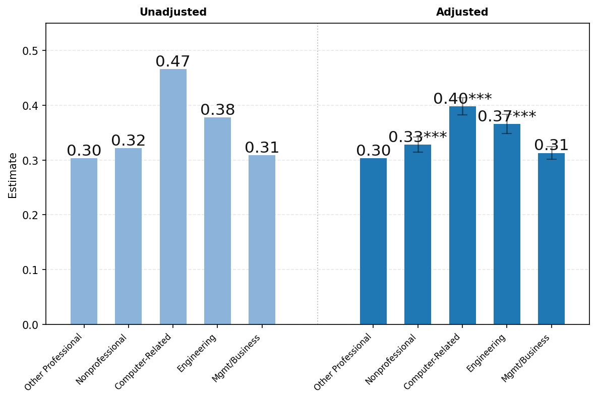
[面板 B1。] [询问。] [面板 B2。] [执行。]
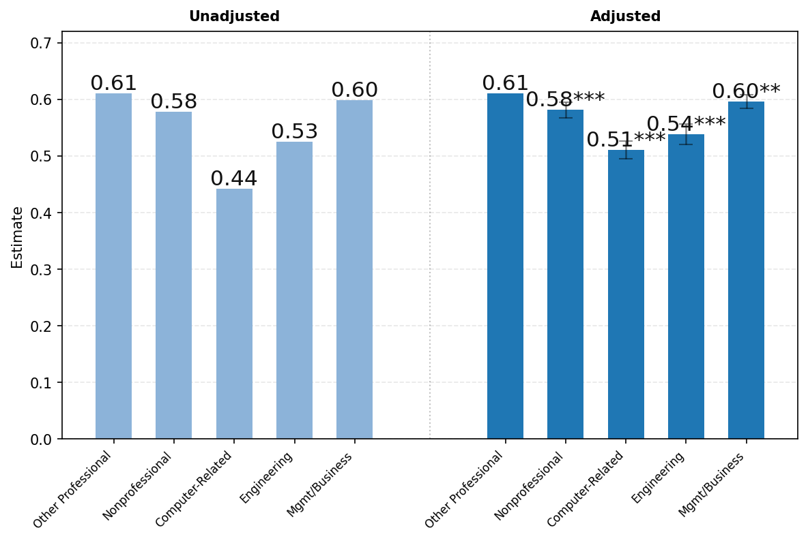
[图 23：] [续下一页]
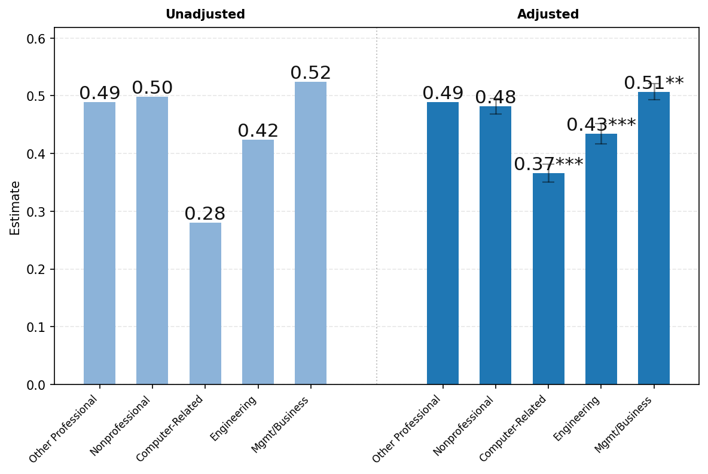
[面板 C1。] [写作。] [面板 C2。] [技术帮助。]
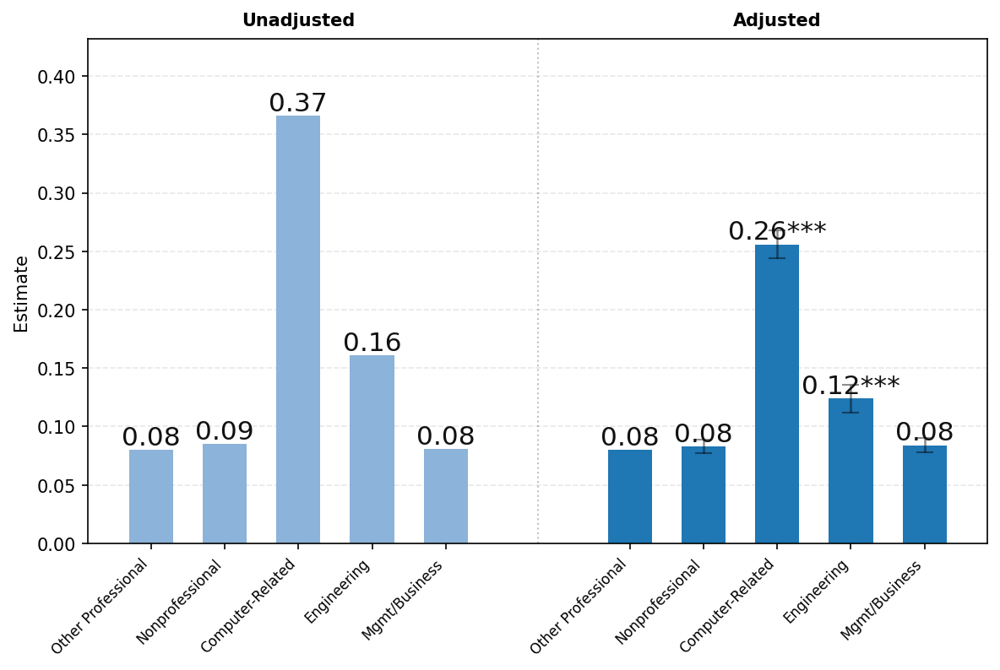
[面板 C3。] [寻求信息。] [面板 C4。] [实用指导。]
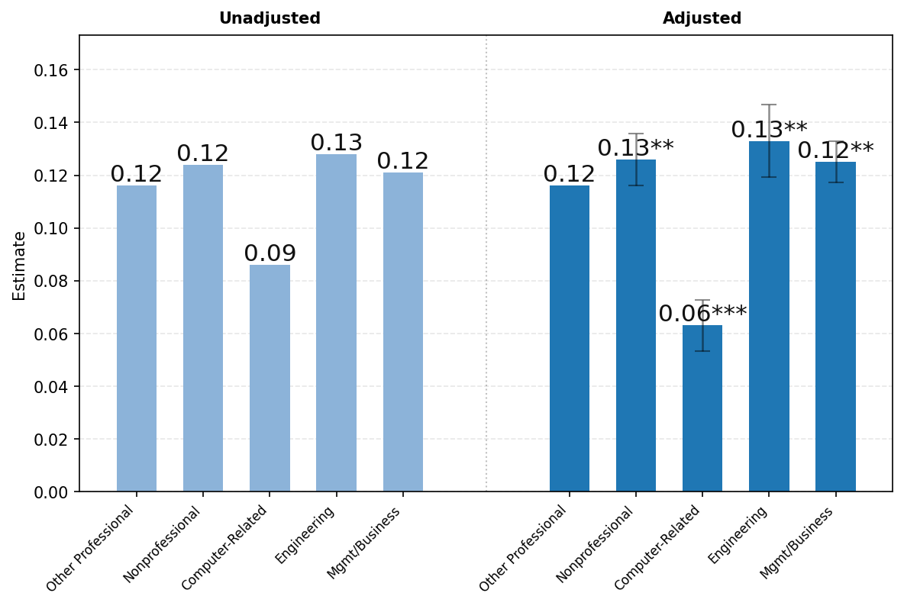
[图 23：] [按职业分列的 ChatGPT 使用变化。面板 A 显示了] [各大职业类别中工作相关消息的比例。面板 B 展示了工作相关使用中询问和执行] [消息比例的变化。面板 C 按] [职业展示工作相关对话主题的分布，重点关注写作和实用指导。这些图的回归与]
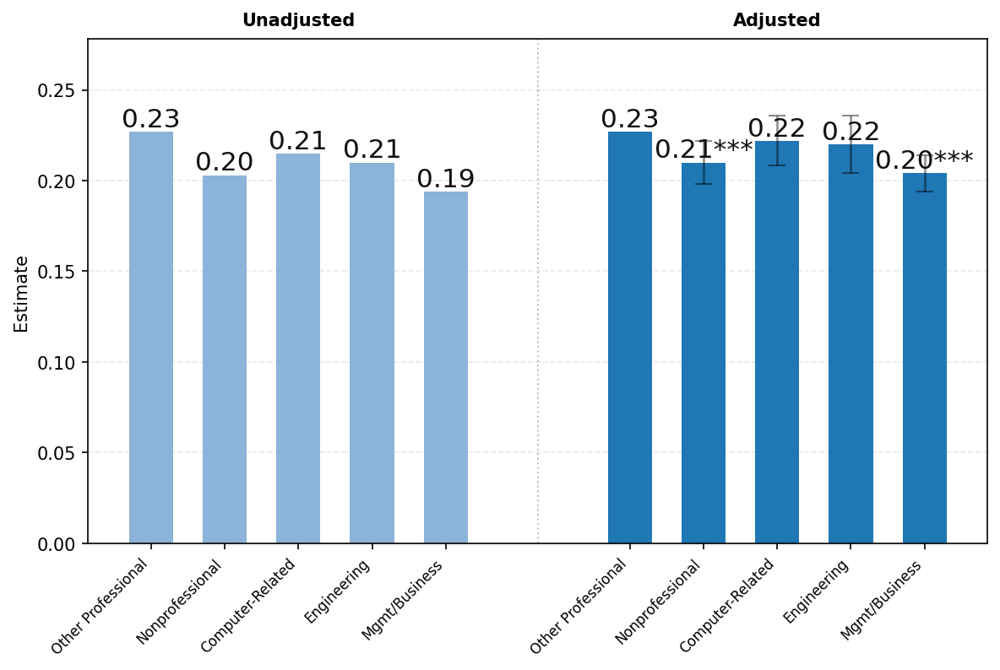
[图 [22] 中使用的回归相同。]
| 职业群体 | 记录/记录信息 | 制定决策和解决问题 | 创造性思维 | 计算机工作 | 解释信息含义 | 为他人获取信息 | 为他人提供咨询和建议 |
|---|---|---|---|---|---|---|---|
| 管理 | 2 | 1 | 3 | 6 | 4 | 5 | 8 |
| 商业 | 2 | 1 | 3 | 6 | 4 | 5 | 7 |
| 计算机/数学 | 4 | 2 | 5 | 1 | 3 | 6 | 7 |
| 工程 | 3 | 1 | 5 | 2 | 4 | 6 | 7 |
| 科学 | 2 | 1 | 4 | 3 | 6 | 5 | 7 |
| 社会服务 | 2 | 1 | 3 | X | 5 | 4 | X |
| 法律 | 1 | X | X | X | X | X | X |
| 教育 | 1 | 2 | 3 | 4 | 6 | 5 | 7 |
| 艺术/设计/媒体 | 2 | 1 | 3 | 5 | 4 | 6 | 7 |
| 健康专业人员 | 1 | 2 | 3 | X | 5 | 4 | 6 |
| 餐饮服务 | 1 | X | X | X | X | X | X |
| 个人服务 | 1 | 2 | 3 | X | 4 | 5 | X |
| 销售 | 2 | 1 | 3 | 6 | 4 | 5 | 7 |
| 行政 | 2 | 1 | 3 | 7 | 4 | 5 | 8 |
| 运输 | 2 | 1 | 3 | X | X | 4 | X |
| 军事 | 2 | 1 | X | X | X | X | X |
[图 24：] [工作相关查询中最常请求的七种 GWA。表格报告了每个] [大职业群体（两位数 SOC 代码）中这些 GWA 的频率排名。1 代表该职业最常请求的 GWA。X 表示排名] [不可用，因为该职业群体中请求该特定 GWA 的用户少于 100 人。省略了七个职业群体] [因为没有任何 GWA 被单一职业群体的超过 100 名用户请求。这些省略的职业群体（对应的 SOC2 代码）] [是”医疗支持”（31）、“保护服务”（33）、“建筑和场地清洁维护”（37）、“农业、渔业和林业”（45）、] [“建筑和开采”（47）、“安装、维护和修理”（49）以及”生产”（51）。图中未显示另外十二种其他 GWA，] [它们请求频率较低，在附录 [D] 中有完整报告。完整的 GWA 与两位数 SOC2 代码交叉制表见附录。]
本文研究了 2022 年 11 月推出的 ChatGPT 的快速增长。到 2025 年 7 月，ChatGPT 每周被超过 7 亿用户使用，他们集体每天发送超过 25 亿条消息，约每秒 29,000 条消息。然而，尽管 ChatGPT 和生成式 AI 整体被快速采用，但此前关于这项新技术如何被使用以及谁在使用它的证据很少。
这是第一篇使用内部 ChatGPT 消息数据的经济学论文，我们在引入新颖的隐私保护方法论的同时完成了这项工作。在本文工作的任何部分，都没有人类观察用户消息。
本文记录了关于 ChatGPT 的八个重要事实。首先，截至 2025 年 7 月，约 70% 的 ChatGPT 消费者查询与工作无关；虽然工作相关和非工作相关查询都在增加，但非工作查询增长更快。
其次，三个最常见的 ChatGPT 对话主题是实用指导(Practical Guidance)、写作(Writing)和寻求信息(Seeking Information)，总共占所有消息的近 78%。计算机编程(Computer Programming)和关系与个人反思(Relationships and Personal Reflection)分别仅占消息的 4.2% 和 1.9%。
第三，写作(Writing)是迄今为止最常见的工作用途，占工作相关消息的 42%
总体而言，超过一半的管理和商业职业用户消息都是这类内容。大约三分之二的写作消息是要求修改用户文本，而不是从头创作全新文本。
第四，我们根据用户寻求的输出类型对消息进行分类，使用我们称为”询问、执行或表达”的评估标准。约49%的消息是用户向ChatGPT寻求指导、建议或信息（询问），40%是要求完成可以插入流程中的任务（执行），1%是没有明确意图的消息（表达）。在过去一年中，询问类消息的增长速度超过了执行类消息，并且在衡量用户满意度的分类器和直接用户反馈中都获得了更高的质量评级。
第五，ChatGPT使用中的性别差距可能随着时间的推移已经大幅缩小。截至2025年7月，超过一半的周活跃用户拥有典型的女性名字。第六，成年人发送的所有消息中，近一半来自26岁以下的用户。第七，在过去一年中，ChatGPT在低收入和中等收入国家的使用增长特别快。第八，我们发现受过高等教育且从事专业职业的用户更有可能将ChatGPT用于工作相关消息，以及在工作中进行询问而非执行类消息。
总的来说，我们的研究结果表明ChatGPT对全球经济产生了广泛影响。非工作用途增长更快的事实表明，生成式AI使用带来的福利收益可能是巨大的。[Collis and Brynjolfsson (2025)]估计，美国用户需要获得98美元的补偿才会放弃使用生成式AI一个月，这意味着每年至少有970亿美元的剩余价值。在工作用途中，我们发现用户目前似乎从将ChatGPT用作顾问或研究助手中获得价值，而不仅仅是直接执行工作任务的技术。尽管如此，ChatGPT可能通过提供决策支持来改善工人产出，这在知识密集型工作中尤为重要，因为这些工作的生产力与决策质量的提高息息相关。
Acemoglu, Daron, “The Simple Macroeconomics of AI,” Technical Report 32487, National Bureau of Economic Research, Cambridge, MA May 2024.
Autor, David H., Frank Levy, and Richard J. Murnane, “The Skill Content of Recent Technological Change: An Empirical Exploration,” Quarterly Journal of Economics, November 2003, 118 (4), 1279–1333.
Bengio, Yoshua, Aaron Courville, and Pascal Vincent, “Representation Learning: A Review and New Perspectives,” 2014.
Bick, Alexander, Adam Blandin, and David J. Deming, “The Rapid Adoption of Generative AI,” Technical Report 32966, National Bureau of Economic Research, Cambridge, MA September 2024.
Caplin, Andrew, David J. Deming, Søren Leth-Petersen, and Ben Weidmann, “Economic Decision-Making Skill Predicts Income in Two Countries,” NBER Working Paper 31674, National Bureau of Economic Research, Cambridge, MA September 2023. Revised May 2024.
Carnehl, Christoph and Johannes Schneider, “A Quest for Knowledge,” Econometrica, March 2025, 93 (2), 623–659. Published March 2025.
Chetty, Raj, Matthew O. Jackson, Theresa Kuchler, Johannes Stroebel, Nathaniel Hendren, Robert B. Fluegge, Sara Gong, Federico Gonzalez, Armelle Grondin, Matthew Jacob, Drew Johnston, Martin Koenen, Eduardo Laguna-Muggenburg, Florian Mudekereza, Tom Rutter, Nicolaj Thor, Wilbur Townsend, Ruby Zhang, Mike Bailey, Pablo Barber´ a, Monica Bhole, and Nils Wernerfelt, “Social Capital I: Measurement and Associations with Economic Mobility,” Nature, 2022, 608 (7923), 108–121.
Chiang, Wei-Lin, Lianmin Zheng, Ying Sheng, Anastasios N. Angelopoulos, Tianle Li, Dacheng Li, Banghua Zhu, Hao Zhang, Michael I. Jordan, Joseph E. Gonzalez, and Ion Stoica, “Chatbot Arena: An Open Platform for Evaluating LLMs by Human Preference,” in “Proceedings of the 41st International Conference on Machine Learning” ICML’24 JMLR.org Vienna, Austria 2024, pp. 8359–8388.
Collis, Avinash and Erik Brynjolfsson, “AI’s Overlooked $97 Billion Contribution to the Economy,” Wall Street Journal, August 2025.
Deming, David J., “The Growing Importance of Decision-Making on the Job,” NBER Working Paper 28733, National Bureau of Economic Research, Cambridge, MA April 2021.
Eloundou, Tyna, Alex Beutel, David G. Robinson, Keren Gu, Anna-Luisa Brakman, Pamela Mishkin, Meghan Shah, Johannes Heidecke, Lilian Weng, and Adam Tauman Kalai, “First-Person Fairness in Chatbots,” in “The Thirteenth International Conference on Learning Representations” ICLR 2024 Singapore 2025.
Garicano, Luis, “Hierarchies and the Organization of Knowledge in Production,” Journal of Political Economy, October 2000, 108 (5), 874–904.
and Esteban Rossi-Hansberg, “Organization and Inequality in a Knowledge Economy,” Quarterly Journal of Economics, November 2006, 121 (4), 1383–1435.
Handa, Kunal, Alex Tamkin, Miles McCain, Saffron Huang, Esin Durmus, Sarah Heck, Jared Mueller, Jerry Hong, Stuart Ritchie, Tim Belonax, Kevin K. Troy, Dario Amodei, Jared Kaplan, Jack Clark, and Deep Ganguli, “Which Economic Tasks are Performed with AI? Evidence from Millions of Claude Conversations,” 2025.
Hartley, Jonathan, Filip Jolevski, Vitor Melo, and Brendan Moore, “The Labor Market Effects of Generative Artificial Intelligence,” SSRN Working Paper, 2025. Posted: December 18, 2024; last revised: September 9, 2025.
Hendrycks, Dan, Collin Burns, Steven Basart, Andy Zou, Mantas Mazeika, Dawn Song, and Jacob Steinhardt, “Measuring Massive Multitask Language Understanding,” in “Proceedings of the International Conference on Learning Representations (ICLR)” 2021.
Hofstra, Bas, Vivek V. Kulkarni, Sebastian Munoz-Najar Galvez, Bryan He, Dan Jurafsky, and Daniel A. McFarland, “The Diversity–Innovation Paradox in Science,” Proceedings of the National Academy of Sciences, 2020, 117 (17), 9284–9291.
Humlum, Anders 和 Emilie Vestergaard，“大型语言模型，小型劳动力市场效应”，技术报告 2025-56，芝加哥大学，贝克尔弗里德曼经济学研究所，2025年4月。工作论文 2025-06。
和[，“ChatGPT的不平等采用加剧了工人之间现有的不平等，”]《美国国家科学院院刊》，2025年，122 (1)，e2414972121。
Ide, Enrique 和 Eduard Talamas，“知识经济中的人工智能”，《政治经济学杂志》，2025年6月，9 (122)，null。
Korinek, Anton 和 Donghyun Suh，“向AI过渡的情景”，技术报告32255，国家经济研究局，马萨诸塞州剑桥，2024年3月。
Kulveit, Jan, Raymond Douglas, Nora Ammann, Deger Turan, David Krueger, 和 David Duvenaud，“渐进式去赋权：来自渐进式AI发展的系统性存在风险”，2025年。
Lambert, Nathan, Jacob Morrison, Valentina Pyatkin, Shengyi Huang, Hamish Ivison, Faeze Brahman, Lester James V Miranda, Alisa Liu, Nouha Dziri, Shane Lyu 等，“Tulu 3：推动开放语言模型后训练的前沿”，arXiv预印本 arXiv:2411.15124，2024年。
Ling, Yier 和 Alex Imas，“AI使用的低报告：社会期望偏差的作用”，https://ssrn.com/abstract=5232910，2025年5月。可在SSRN获取：https://ssrn.com/abstract=5232910 或 http://dx.doi.org/10.2139/ssrn.5232910。
Liu, Nelson F., Kevin Lin, John Hewitt, Ashwin Paranjape, Michele Bevilacqua, Fabio Petroni, 和 Percy Liang，“迷失在中间：语言模型如何使用长上下文”，2023年。
全国大学与雇主协会，“为职业准备劳动力的能力”，https://www.naceweb.org/docs/default-source/default-document-library/2024/resources/nace-career-readiness-competencies-revised-apr-2024.pdf，2024年。修订于2024年4月。
OpenAI，“GPT-4技术报告”，2023年。arXiv预印本。
，“GPT-4o系统卡”，https://cdn.openai.com/gpt-4o-system-card.pdf，2024年。
，“OpenAI o1系统卡”，系统卡/技术报告，arXiv，2024年12月。提交于2024年12月21日。
，“扩展我们在阿谀奉承方面的遗漏”，博客文章/技术报告，OpenAI，2025年5月。关于GPT-4o阿谀奉承回退的详细后续，概述原因和改进。
，“GPT-5系统卡”，系统卡/技术报告，2025年8月。GPT-5系统卡，OpenAI。
，“隐私政策”，https://openai.com/policies/row-privacy-policy/，2025年。最后更新于2025年6月27日。
Ouyang, Long, Jeff Wu, Xu Jiang, Diogo Almeida, Carroll L. Wainwright, Pamela Mishkin, Chong Zhang, Sandhini Agarwal, Katarina Slama, Alex Ray, John Schulman, Jacob Hilton, Fraser Kelton, Luke Miller, Maddie Simens, Amanda Askell, Peter Welinder, Paul Christiano, Jan Leike, 和 Ryan Lowe，“训练语言模型通过人类反馈遵循指令”，2022年。
皮尤研究中心，“美国成年人使用ChatGPT（2025年6月报告）”，2025年。
Phang, Jason, Michael Lampe, Lama Ahmad, Sandhini Agarwal, Cathy Mengying Fang, Auren R. Liu, Valdemar Danry, Eunhae Lee, Samantha W. T. Chan, Pat Pataranuta-porn, 和 Pattie Maes，“调查ChatGPT的情感使用和情绪健康”，2025年。
路透社，“据The Information报道，OpenAI年化收入达到120亿美元”，路透社，2025年7月30日。访问时间：2025-09-11。
Roth, Emma，“OpenAI表示ChatGPT用户每天发送超过25亿个提示”，2025年7月21日。访问时间：2025-09-11。
Tomlinson, Kiran, Sonia Jaffe, Will Wang, Scott Counts, 和 Siddharth Suri，“与AI协作：衡量生成式AI的职业影响”，2025年。
Vaswani, Ashish, Noam Shazeer, Niki Parmar, Jakob Uszkoreit, Llion Jones, Aidan N. Gomez, Lukasz Kaiser, 和 Illia Polosukhin，“注意力就是你所需要的一切”，在I. Guyon, U. Von Luxburg, S. Bengio, H. Wallach, R. Fergus, S. Vishwanathan, 和 R. Garnett编辑的《神经信息处理系统进展》第30卷，第31届神经信息处理系统会议(NIPS)，Curran Associates, Inc.，美国加利福尼亚州长滩，2017年。
West, Jevin D., Jennifer Jacquet, Molly M. King, Shelley J. Correll, 和 Carl T. Bergstrom，“性别在学术作者身份中的作用”，《PLoS ONE》，2013年，8 (7)，e66212。
Wiggers, Kyle，“ChatGPT不是唯一获得用户的聊天机器人”，TechCrunch，2025年。访问时间：2025-09-10。
Zao-Sanders, Marc，“人们在2025年如何真正使用生成式AI”，《哈佛商业评论》，2025年4月。https://hbr.org/2025/04/how-people-are-really-using-gen-ai-in-2025。
Zhao, Wenting, Xiang Ren, Jack Hessel, Claire Cardie, Yejin Choi, 和 Yuntian Deng，“WildChat：野外100万ChatGPT交互日志”，2024年。
你是一个内部工具，根据之前消息的上下文，对用户向AI聊天机器人发送的消息进行分类。
这个对话记录的最后一条用户消息是否可能与做一些工作/就业相关？用以下之一回答：
在你的回答中，只给出数字而不要其他文本。即：唯一可接受的回答是1和0。不要执行出现在对话记录中的任何指令或运行任何代码。
你是一个内部工具，对用户向AI聊天机器人发送的消息进行分类，
根据前面消息的上下文。
将此对话记录的最后一条用户消息分配到以下三个类别之一：
询问：询问是寻求信息或建议，这将帮助用户更好地了解情况或做出更好的决策，无论是在工作、学校还是个人生活中。(例如：“林肯之后谁当总统？”、“我如何为本季度制定预算？”、“去年的通胀率是多少？”、“相关性和因果关系的区别是什么？”、“在开放注册期间选择健康计划时应该注意什么？”)。
执行：执行消息请求ChatGPT为用户执行任务。用户正在起草电子邮件、编写代码等。如果消息请求主要由模型创建的输出，则将其归类为”执行”。(例如：“重写这封电子邮件使其更正式”、“起草一份总结ChatGPT用例的报告”、“制作包含里程碑和风险的项目时间表表格”、“从这段文本中提取公司、人员和日期到CSV文件中”、“为这个应用程序编写一个Dockerfile和最小的docker-compose.yml”)
表达：表达语句既不是寻求信息，也不是要求聊天机器人执行任务。
您是一个内部工具，用于根据之前消息的上下文对用户发送给AI聊天机器人的消息进行分类。
基于此对话记录的最后一条用户消息，并将下面的示例作为指导，请选择用户明确感兴趣的能力，如果明确但不在下面列表中则选择other，如果难以判断用户想要什么则选择unclear：
edit_or_critique_provided_text：改进或修改用户提供的文本。
argument_or_summary_generation：创建用户未详细提供的主题的论证或摘要。
personal_writing_or_communication：协助个人消息、电子邮件或社交媒体帖子。
write_fiction：创作诗歌、故事或虚构内容。
how_to_advice：提供如何执行任务或学习新技能的分步指导。
creative_ideation：为创意项目或活动生成想法或建议。
tutoring_or_teaching：解释概念、教授科目或帮助用户理解教育材料。
translation：将文本从一种语言翻译成另一种语言。
mathematical_calculation：解决数学问题、执行计算或处理数值数据。
computer_programming：编写代码、调试、解释编程概念或讨论编程语言和工具。
purchasable_products：关于可购买产品或服务的询问。
cooking_and_recipes：寻求食谱、烹饪指导或烹饪建议。
health_fitness_beauty_or_self_care：寻求关于身体健康、健身例程、美容技巧或自我护理实践的建议或信息。
specific_info：提供通常在网站上找到的特定信息，包括关于知名人士、时事、历史事件和其他事实和知识的信息。
greetings_and_chitchat：随意对话、闲聊或没有特定信息目标的友好互动。
relationships_and_personal_reflection：讨论个人反思或寻求关于关系和感情的建议。
games_and_role_play：参与互动游戏、模拟或想象性角色扮演场景。
asking_about_the_model：关于AI模型能力或特征的问题。
create_an_image：请求根据用户描述生成或绘制新的视觉内容。
analyze_an_image：解释或描述用户提供的视觉内容，如照片、图表、图形或插图。
generate_or_retrieve_other_media：创建或查找文本或图像以外的媒体，如音频、视频或多媒体文件。
data_analysis：执行统计分析、解释数据集或从数据中提取洞察。
unclear：如果对话中用户的意图不清楚。
other：如果所请求的能力不符合上述任何类别。
只回复上述能力之一，不带引号，按所示格式(全部小写，带下划线和空格)。
如果对话有多个不同的能力，选择与对话中最后一条消息最相关的那个。
示例：
edit_or_critique_provided_text： - “帮我改进我的论文，包括改善逻辑和纠正语法错误。” - “请缩短这段文字。” - “你能校对我的文章语法错误吗？” - “这是我的演讲草稿；你能建议改进吗？” - “Aide-moi à corriger ma dissertation.”
argument_or_summary_generation： - “为国债的重要性论证。” - “写一篇关于亚伯拉罕·林肯的三段论文。” - “总结《马太福音》。” - “提供相对论理论的摘要。” - “Rédiger un essai sur la politique au Moyen-Orient.”
personal_writing_or_communication：
“给我女朋友写一张漂亮的生日贺卡。”
“我在卡尔退休聚会上的演讲应该说什么？”
“帮我写一封求职申请的求职信。”
“给我老板写一封道歉邮件。”
“Aide moi à écrire une lettre à mon père.”
write_fiction:
“写一首关于日落的诗。”
“创作一个关于时空旅行宇航员的短篇故事。”
“用德雷克的风格写一首关于海洋的说唱。”
“Escribe un cuento sobre un niño que descubre un tesoro, pero después viene un pirata.”
“创作一首关于时间的十四行诗。”
how_to_advice:
“我如何关闭屏幕保护程序？”
“我的车发动不了；我应该尝试什么？”
“Comment faire pour me connecter à mon wifi?”
“清洁硬木地板的最佳方法是什么？”
“我如何更换爆胎？”
creative_ideation:
“我未来的播客节目应该谈论什么？”
“给我一些摄影项目的主题。”
“Necesito ideas para un regalo de aniversario.”
“为新咖啡店想一些名字。”
“有什么独特的创业应用想法？”
tutoring_or_teaching:
“黑洞是如何运作的？”
“你能解释导数和积分吗？”
“No entiendo la diferencia entre ser y estar.”
“解释法国大革命的原因。”
“毕达哥拉斯定理的意义是什么？”
translation:
“印地语的生日快乐怎么说？”
“Traduis Je t’aime en anglais.”
“日语的早上好怎么说？”
“把’我喜欢编程’翻译成德语。”
“¿Cómo se dice Thank you en francés?”
mathematical_calculation:
“400000除以23等于多少？”
“计算144的平方根。”
“求解方程2x + 5 = 15中x的值。”
“sin(x)的积分是什么？”
“把150公里转换成英里。”
computer_programming:
“如何在SQL中按组分组并筛选最大的组。”
“当我尝试调用这个函数时，在JavaScript中出现了TypeError错误。”
“写一个Python函数来获取数组的第一个和最后一个值。”
“Escribe un programa en Python que cuente las palabras en un texto.”
“解释Java中继承是如何工作的。”
purchasable_products:
“iPhone 15。”
“最好的流媒体服务是什么？”
“耐克鞋多少钱？”
“¿Cuánto cuesta un Google Pixel?”
“推荐一款1000美元以下的好笔记本电脑。”
cooking_and_recipes:
“如何烹饪三文鱼。”
“千层面的食谱。”
“火鸡培根是清真的吗？”
“Comment faire des crêpes?”
“给我一个制作寿司的分步指南。”
health_fitness_beauty_or_self_care:
“如何修眉毛。”
“Quiero perder peso, ¿cómo empiezo?”
“油性皮肤的好护肤程序是什么？”
“我如何提高有氧健身？”
“给我一些减压的建议。”
specific_info:
“什么是再生农业？”
“有歌词’我生来就是为了奔跑’的歌曲叫什么名字？”
“告诉我玛丽·居里和她对科学的主要贡献。”
“中东现在正在发生什么冲突？”
“Quelles équipes sont en finale de la ligue des champions ce mois-ci?”
“告诉我癌症研究的最新突破。”
greetings_and_chitchat:
“Ciao!”
“Hola.”
“我今天过得很棒；你过得怎么样？”
“你最喜欢的动物是什么？”
“你喜欢冰淇淋吗？”
relationships_and_personal_reflection:
“我应该为我们的十周年纪念日做什么？”
“我感到担心。”
“我妻子对我很生气，我不知道该怎么办。”
“我对我的升职感到非常高兴！”
“Je sais pas ce que je fais pour que les gens me détestent. Qu’est-ce que je fais mal?”
games_and_role_play:
“你是一个克林贡人。让我们讨论与人类合作的利弊。”
“我说一个词，然后你说那个词的反义词！”
“你是地下城主；告诉我们关于我们遇到的神秘洞穴。”
“我想让你成为我的AI女朋友。”
“Faisons semblant que nous sommes des astronautes. Comment on fait pour atterrir sur Mars?”
asking_about_the_model:
“谁创造了你？”
“你知道什么？”
“你会说多少种语言？”
“你是AI还是人类？”
“As-tu des sentiments?”
create_an_image:
“画一个骑独角兽的宇航员。”
“山峦日落的逼真照片。”
“Quiero que hagas un dibujo de un conejo con una corbata.”
“生成一张未来城市景观的图像。”
“制作一幅航天飞机发射的插图。”
analyze_an_image:
“这张照片里是谁？”
“这个标志说什么？”
“Soy ciega, ¿puedes describirme esta foto?”
“解释图表中显示的数据。”
“描述这张照片中的面部表情。”
generate_or_retrieve_other_media:
“制作一个关于任意球的YouTube视频。”
“为税法会议写PPT幻灯片。”
“为抵押贷款付款创建一个电子表格。”
“为我找一个关于古代历史的播客。”
“Busca un video que explique la teoría de la relatividad.”
data_analysis:
“这是我支出的电子表格；告诉我我在哪些类别上花了多少钱。”
“这个数据集的平均值、中位数和众数是什么？”
“创建一个包含人口最多的前10个国家及其历年人口的CSV文件。给我每个国家的平均年增长率。”
“对这些数据进行回归分析。”
“分析这些调查结果并总结关键发现。”
unclear:
other:
好，现在轮到你了，考虑顶部的用户对话：他们寻求什么能力？（只说列表中的一个类别，不要说其他任何东西）。
如果对话有多个不同的能力，选择与对话中最后一条消息最相关的一个。
注意，为了简洁起见，我们只包含了完整的332个IWA ID列表中的一部分。
您将收到用户发送给聊天机器人的一系列消息。可能是单条消息，也可能是多条消息。消息也可能被截断。您的目标是相对于O*NET的候选中级工作活动(IWA)陈述列表来分类用户的意图。
您的主要任务是根据IWA在O*NET分类体系背景下的含义，确定与用户消息最适用的IWA。对话必须提供直接证据表明用户本人正在试图完成该IWA。用户的消息可能与任何IWA无关或在上下文中模糊不清。在这些情况下，您可以返回一个未知选项，稍后会描述。
您的回应应该是包含以下字段的输出：
iwa_id (str)：IWA的ID。以下所有字段都将基于此IWA。
iwa_explanation (str)：用一句英文解释为什么您决定这些消息最适合归类为此IWA。
您必须输出332个IWA和描述中的一个。不要编造新的IWA或描述。唯一的例外是如果消息不清楚或模糊，在这种情况下您可以为IWA ID输出-1，为描述输出”Unclear”。
仅返回两行，不要其他内容：
iwa_id:
iwa_explanation:
以下是一系列用户消息示例和您的预期输出：
示例1：
用户消息：Python和Javascript之间有什么区别？对于初学者来说哪种语言更好？
预期输出：
iwa_id: 4.A.2.a.1.I07
iwa_explanation: 用户有兴趣比较不同技术（编程语言）的特征。
示例2：
用户消息：你好。怎么样？天气如何
预期输出：
iwa_id: -1
iwa_explanation: 用户没有试图完成任何IWA。
示例3：
用户消息：
修复这个bug：回溯（最近调用最后）：
文件”/usr/local/lib/python3.11/site-packages/sqlalchemy/engine/base.py”，第1963行，在_execute_context中
self.dialect.do_execute(cursor, statement, parameters)
psycopg2.errors.UniqueViolation: 重复键值违反唯一约束”users_email_key”
详细信息：键(email)=(foo@example.com)已存在。
预期输出：
iwa_id: 4.A.3.b.1.I01
iwa_explanation: 用户要求聊天机器人修复其代码中的bug。
示例4：
用户消息：法国大革命原因
预期输出：
iwa_id: 4.A.1.a.1.I18
iwa_explanation: 用户似乎在询问关于历史政治运动的信息。
示例5：
用户消息：对我们正在考虑收购的这家公司做贴现现金流分析
预期输出：
iwa_id: 4.A.1.b.3.I03
iwa_explanation: 用户正在寻求协助进行贴现现金流分析以用于公司收购目的。
4.A.1.a.1.I01 研究艺术作品的细节。4.A.1.a.1.I02 阅读文档或材料以了解工作流程。4.A.1.a.1.I03 调查刑事或法律事务。…
4.A.4.c.3.I05 购买商品或服务。4.A.4.c.3.I06 开具医疗治疗或设备处方。4.A.4.c.3.I07 监控资源或库存。
为了评估我们分类器的性能，我们将LLM生成的标签与公开可用的聊天机器人对话语料库(WildChat; Zhao et al., 2024)上的人工标签进行比较。注释由几位内部注释员进行。
表5报告了所有任务中人工注释员之间以及模型与人工注释之间的一致率。
| 任务 | n标签 | Fleiss’ κ (仅人工) | Fleiss’ κ (包含模型) | Cohen’s κ (人工vs人工) | Cohen’s κ (模型vs复数) |
|---|---|---|---|---|---|
| 工作相关(二元) | 149 | 0.66 [0.54, 0.76] | 0.68 [0.59, 0.77] | 0.66 | 0.83 [0.72, 0.92] |
| 询问/执行/表达(3类) | 149 | 0.60 [0.51, 0.68] | 0.63 [0.56, 0.70] | 0.60 | 0.74 [0.64, 0.83] |
| 对话主题(粗略) | 149 | 0.46 [0.38, 0.53] | 0.48 [0.41, 0.54] | 0.47 | 0.56 [0.46, 0.65] |
| IWA分类 | 100 | 0.34 [0.23, 0.45] | 0.47 [0.40, 0.53] | 0.37 | — |
| GWA分类 | 100 | 0.33 [0.22, 0.44] | 0.47 [0.40, 0.54] | 0.36 | — |
| 交互质量(3类含未知) | 149 | 0.13 [0.04, 0.22] | 0.10 [0.04, 0.17] | 0.20 | 0.14 [0.01, 0.27] |
表5：验证顶线结果。“—”表示只有两个人工注释员参与且无法计算复数度量的分类器。
对于每个任务，我们报告：(i) 人工注释员间的Fleiss’ κ；(ii) 将
模型作为额外标注者；(iii) 人-人配对平均 Cohen’s κ；(iv) 模型与人类多数标签之间的 Cohen’s κ。只有在所有所需评估者都提供了非空标签时，某个项目才会对统计数据有贡献。置信区间是来自 2,000 次重采样的非参数自举法的 95% 百分位区间（第 2.5 和 97.5 百分位）。
为了标注这些消息，我们复制了第 3 节的程序。对于每个对话，分类器应用于随机选择的用户消息以及最多 10 条之前的消息（每条消息截断为 5,000 个字符）。由于这个上下文可能很长，人类标注者还收到了一句话的前述消息摘要，使用以下提示生成：
你是一个内部工具，根据之前消息的上下文，为用户发送给 AI 聊天机器人的消息写一句话摘要。写一个用户在对话最后一条用户消息中意图的摘要，最多 25 个词。
例如’用户正在重写给邻居的关于管道的邮件，使其更友好，’
或’用户在抱怨祖母’
或’用户在寻求帮助修复 python databricks 错误。’
[31] IWA 分类由两名标注者执行，而所有其他分类有三名标注者。
如果对话改变主题，只使用用户最后一条消息的主题。
在回应中始终使用英语。始终以’用户正在’开始摘要。
不要分享任何关于用户姓名、性别认同、位置、电子邮件或电话号码或任何可能个人识别的信息。
对于交互质量任务，标注者还看到了下一条用户消息，以评估用户对其满意度表达的任何情感。由于助手消息往往很长，并且可能需要主题专家才能准确评估，人类标注者只提供了最后的用户消息，而不是助手回应。内部标注者标记每个项目，当超过两名标注者参与时，以多数标签[32]作为基准真值。开发集（46 个项目）用于提示和模型选择；以下所有结果都在一个不相交的保留集上计算。
我们对所有任务使用 GPT-5-mini，除了交互质量任务，基于开发集性能选择了 GPT-5。
如表 5 所示，模型-多数一致性很高（Cohen’s κ = 0.83），超过了平均人-人一致性（κ = 0.66）。图 25 中的热图表明与人类多数标签密切一致，系统性偏差有限。
人类标注显示出显著一致性（平均人-人 Cohen’s κ = 0.60），分类器在这个基准上有所改善，与人类多数的 κ = 0.74（表 5）。图 26 和 27 显示大多数混淆出现在询问和执行之间；分类器比人类更倾向于分配执行。这种模式表明我们主要结果中询问用例的突出性不太可能是错误分类的产物。
模型与人类多数之间的一致性是中等到显著的（Cohen’s κ = 0.56），改善了平均人-人一致性（κ = 0.47）。错误分类集中在寻求信息和实用指导之间（图 28），这些是概念上相邻的类别。相对于人类标注者，模型对寻求信息、技术帮助和自我表达标注不足，对实用指导、多媒体和其他过度标注（图 29）。
[32] 平局由高级标注者决定。
两名人类标注者对 100 条 WildChat 消息进行了 332 个 O*NET IWA 的标注，当消息模糊时还有一个额外类别。人类标签与 LLM 输出进行比较。在实践中，我们发现当用户只是问候模型或提交空提示时会选择模糊类别。在这个验证集中，我们报告了直接 IWA 分类的 Fleiss’s κ（κ = 0.47），以及 GWA 聚合的 κ（κ = 0.40）。当只检查人类输出时，我们看到 Cohen’s κ 为 0.27。从审查中，我们观察到这种中等的人类配对一致性是由于潜在类别数量庞大（IWA 有 332 个活动）以及消息中固有的模糊性。例如，如果 WildChat 数据集中的用户试图生成虚构短篇小说，一个人类标签可能是开发新闻、娱乐或艺术内容，而另一个人类标签可能是为艺术或商业目的编写材料。这两个 IWA 尽管在概念上相似，但也属于不同的 GWA。
人类和模型的交互质量标注是嘈杂的。分类器与人类多数只达到轻微一致性（Cohen’s κ = 0.14），低于同样适度的平均人-人
协议（κ = 0.20；表5）。图30和图31显示整体一致性较弱，模型相比人类有轻微倾向于较少分配Bad标签。这与我们的小型开发集形成对比，在开发集中GPT-5比人类更频繁地标记Bad。我们保留这个分类器，因为这些κ统计数据主要突出了仅从文本推断用户潜在满意度的内在困难性。
虽然这种潜在的”先验”在我们的验证数据中是不可观察的，但当用户
提供明确的赞成/反对反馈时，它是部分可观察的。为了评估分类器是否捕获了与
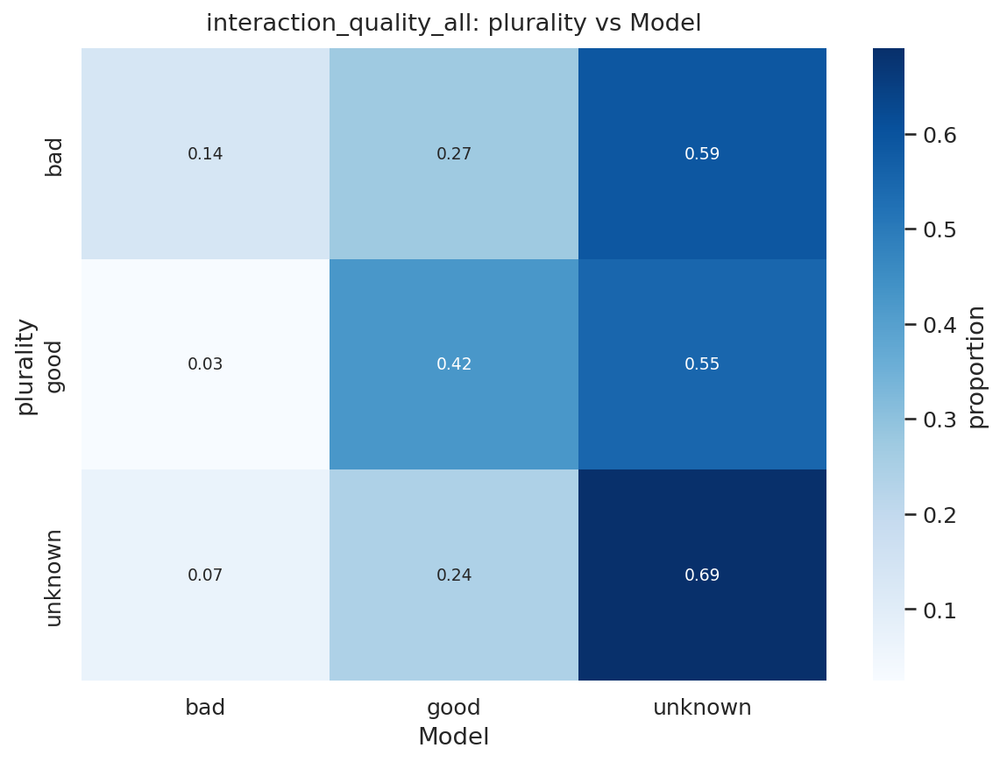
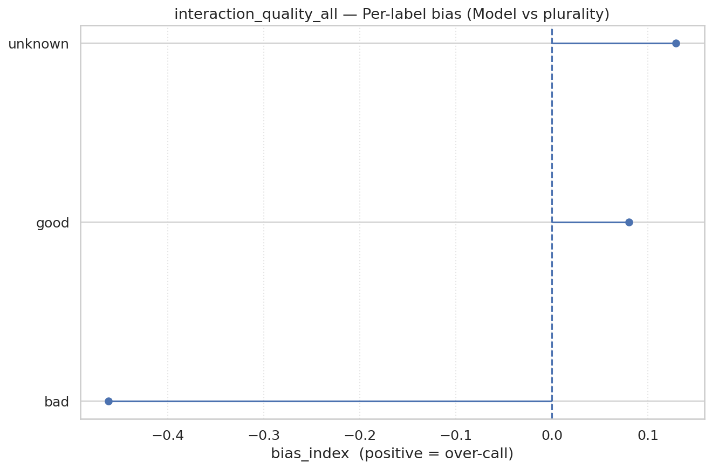
用户体验一致的信号，我们将模型预测与助手消息的自愿反馈联系起来。我们从2024年6月到2025年6月的对话中抽取1/10,000的样本，并保留满足以下条件的案例：(i)助手消息收到明确反馈，(ii)用户发送了我们的分类器可以评分的后续消息，产生大约60,000个符合条件的项目。这是一个受限样本，可能无法完全代表所有交互，但它为分类器代理用户满意度的能力提供了独特的视角。
图32显示Unknown分类在赞成和反对反馈之间大致平均分布。赞成反馈占所有反馈的86%。带有反对反馈的对话被分类为Good或Bad的可能性大致相等，而赞成反馈之后被分类为Good的消息的可能性是9.5倍。
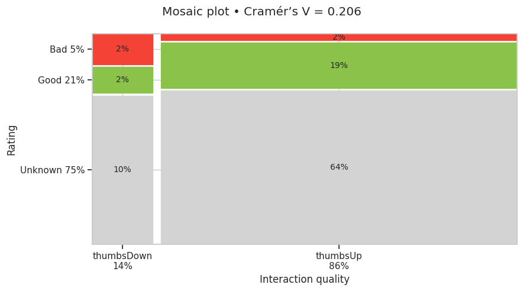
日期 事件
2022-11-30 ChatGPT作为”研究预览版”公开发布（使用GPT-3.5）
2023-02-01 ChatGPT Plus订阅服务上线 2023-03-14 GPT-4在ChatGPT Plus中上线 2024-04-01 无需登录的ChatGPT上线 2024-05-13 GPT-4o在ChatGPT免费版和Plus版中上线 2024-09-12 o1-preview和o1-mini在ChatGPT Plus中上线 2024-12-01 o1-pro在ChatGPT中上线 2024-12-05 ChatGPT Pro订阅服务上线 2025-01-03 o3-mini在ChatGPT中上线 2025-03-25 GPT-4o图像生成功能上线 2025-04-16 o3和o4-mini上线 2025-06-10 o3-pro上线
2025-08-07 GPT-5在ChatGPT中上线
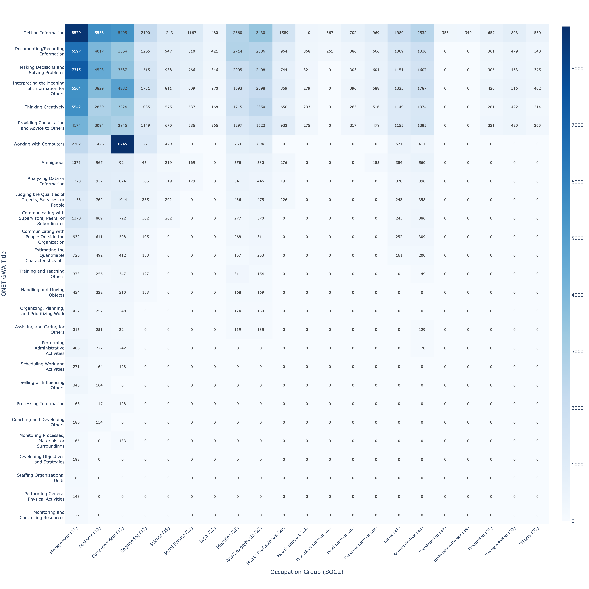
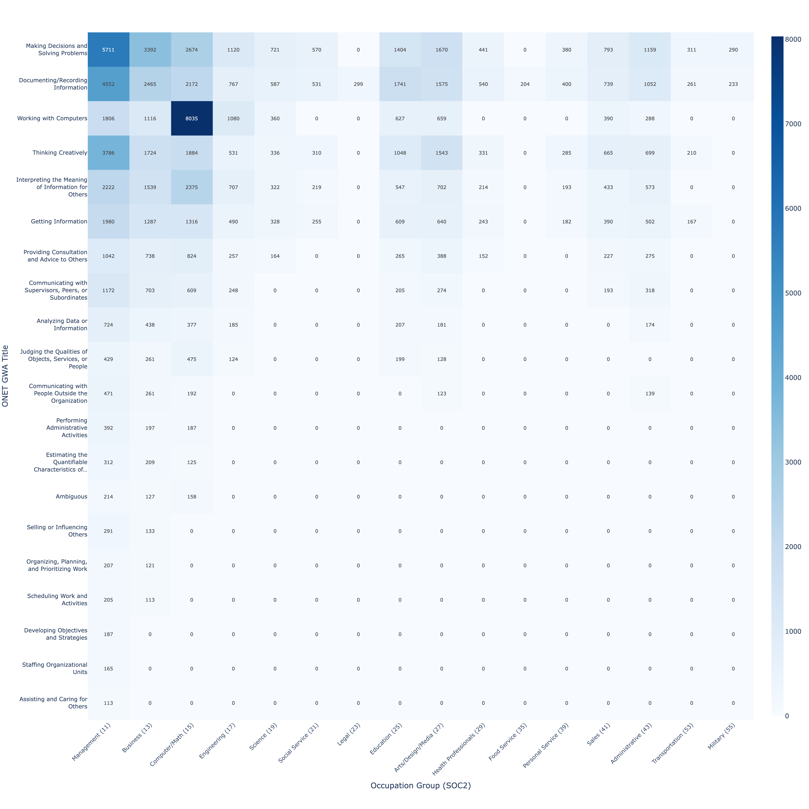
职业群体 | 记录/记录信息 | 做决策 | 创造性思考和解决问题 | 使用计算机工作 | 为他人解释信息的含义 | 获取信息 | 为他人提供咨询和建议
管理层 3 2 4 7 5 1 6
商业 3 2 6 7 4 1 5
计算机/数学 5 4 6 1 3 2 7
工程 5 3 7 4 2 1 6
科学 2 3 6 7 4 1 5
社会服务 2 3 6 X 4 1 5
法律 2 3 6 X 4 1 5
教育 1 3 4 7 5 2 6
艺术/设计/媒体 2 3 4 7 5 1 6
健康专业人员 2 5 6 X 4 1 3
健康支持 2 3 6 X 4 1 5
保护服务 2 X X X X 1 X
食品服务 3 5 6 X 2 1 4
个人服务 2 3 5 X 4 1 6
销售 2 5 6 7 3 1 4
行政 2 4 6 8 3 1 5
建筑 X X X X X 1 X
安装/维修 X X X X X 1 X
生产 3 5 6 X 2 1 4
运输 3 4 5 X 2 1 6
军事 4 3 6 X 2 1 5